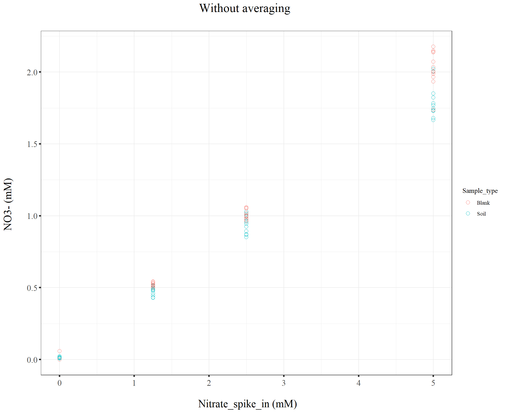
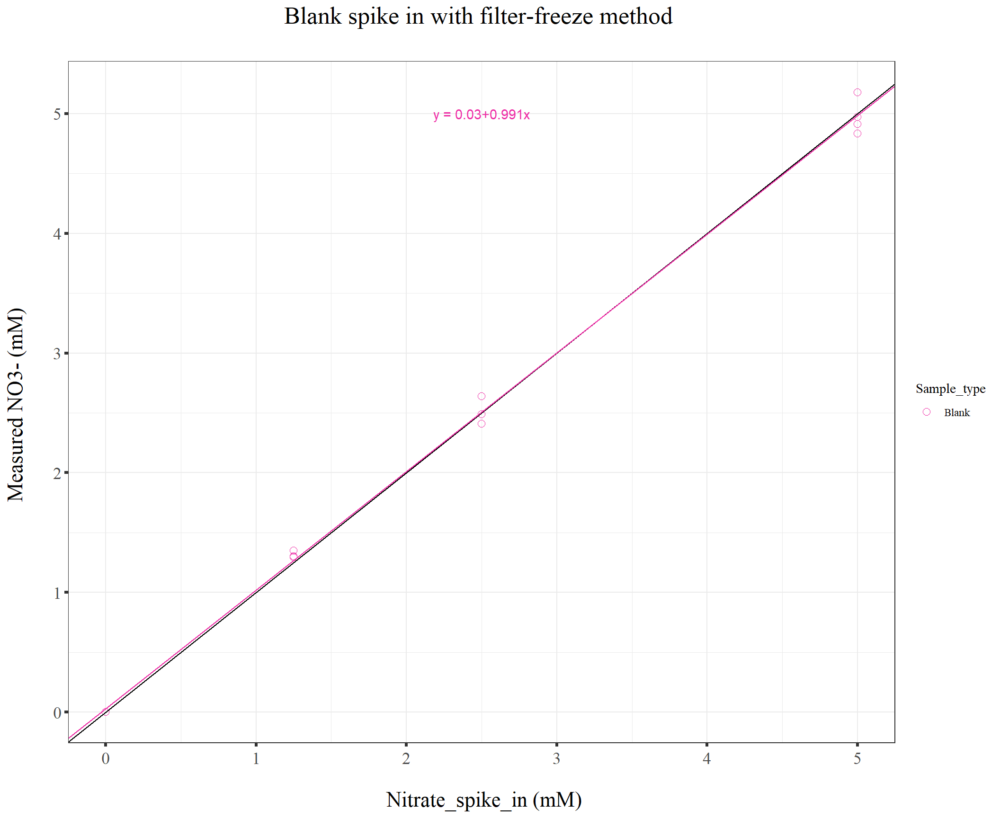
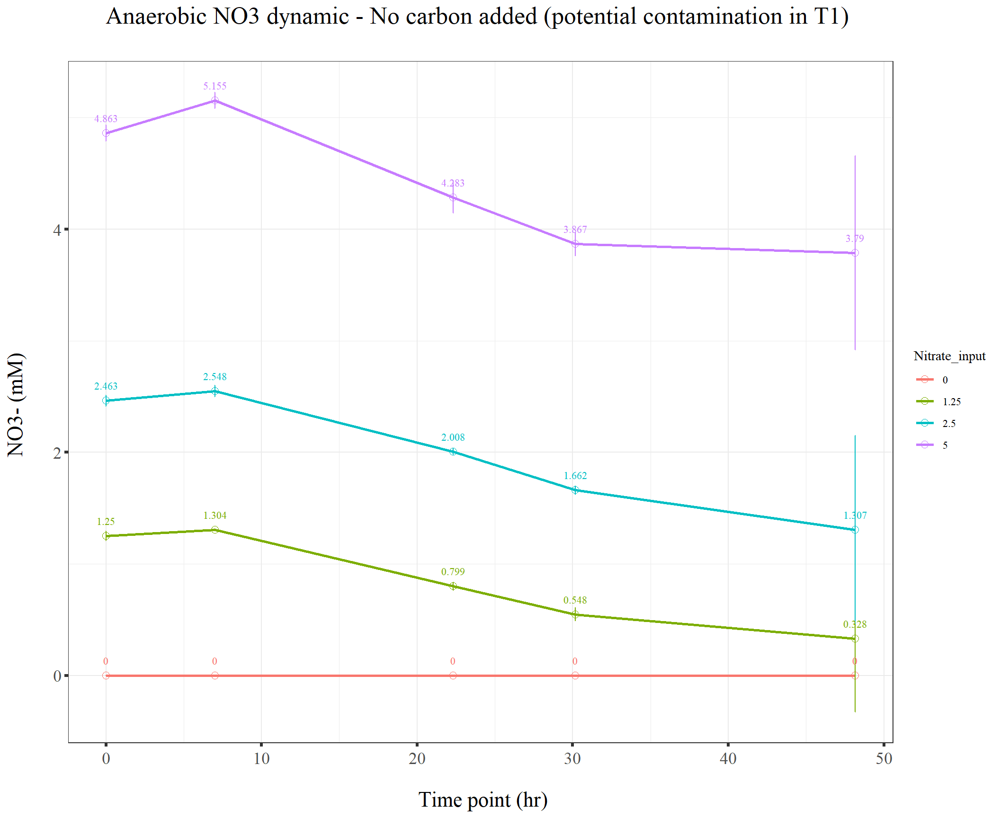
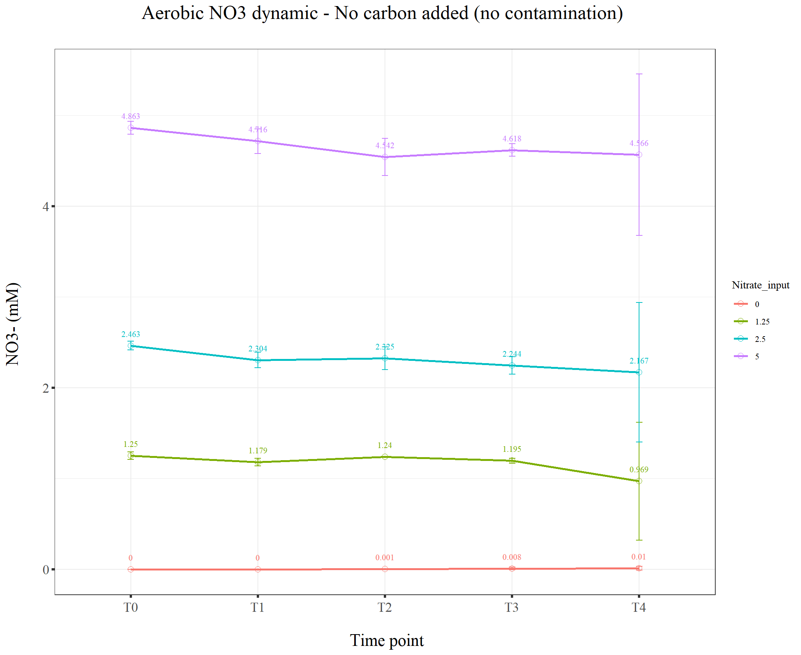
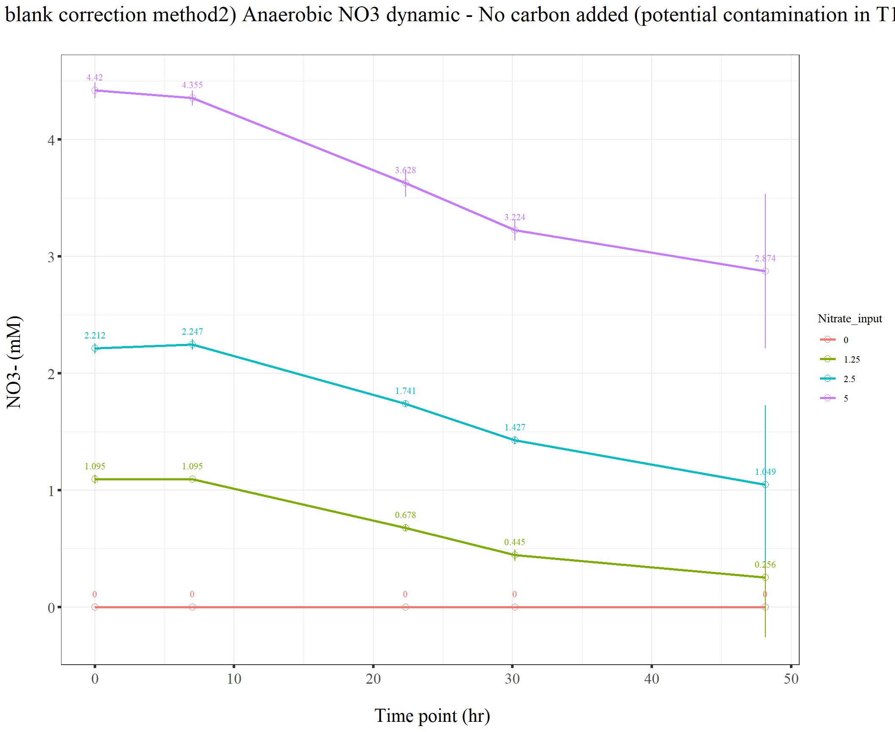
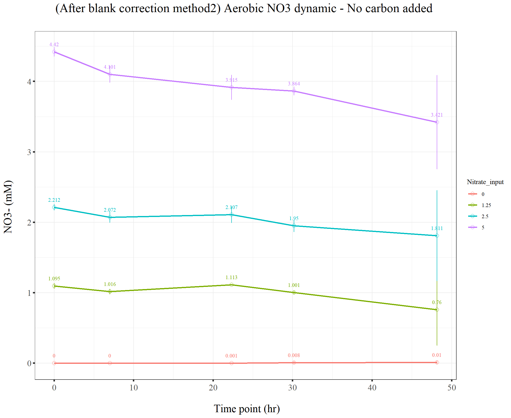

211028_Griess_time_series_trial2
KiseokUchicago
2021-11-05
Last updated: 2021-11-29
Checks: 7 0
Knit directory: Denit_visualization_R/
This reproducible R Markdown analysis was created with workflowr (version 1.6.2). The Checks tab describes the reproducibility checks that were applied when the results were created. The Past versions tab lists the development history.
Great! Since the R Markdown file has been committed to the Git repository, you know the exact version of the code that produced these results.
Great job! The global environment was empty. Objects defined in the global environment can affect the analysis in your R Markdown file in unknown ways. For reproduciblity it’s best to always run the code in an empty environment.
The command set.seed(20210924) was run prior to running the code in the R Markdown file. Setting a seed ensures that any results that rely on randomness, e.g. subsampling or permutations, are reproducible.
Great job! Recording the operating system, R version, and package versions is critical for reproducibility.
Nice! There were no cached chunks for this analysis, so you can be confident that you successfully produced the results during this run.
Great job! Using relative paths to the files within your workflowr project makes it easier to run your code on other machines.
Great! You are using Git for version control. Tracking code development and connecting the code version to the results is critical for reproducibility.
The results in this page were generated with repository version 8bde509. See the Past versions tab to see a history of the changes made to the R Markdown and HTML files.
Note that you need to be careful to ensure that all relevant files for the analysis have been committed to Git prior to generating the results (you can use wflow_publish or wflow_git_commit). workflowr only checks the R Markdown file, but you know if there are other scripts or data files that it depends on. Below is the status of the Git repository when the results were generated:
Ignored files:
Ignored: .Rhistory
Ignored: .Rproj.user/
Ignored: Figure_211014_external_lab/
Untracked files:
Untracked: 210928_pH.pdf
Untracked: 211014_TN.pdf
Untracked: 211014_drying_oven_TOC.pdf
Untracked: 211014_toc_lab.pdf
Untracked: 211020_df_full_innate.xlsx
Untracked: Figure_210911_TOC/
Untracked: Figure_210924/
Untracked: Figure_210927_TOC/
Untracked: Figure_210929/
Untracked: Figure_211006/
Untracked: Figure_211007/
Untracked: Figure_211008/
Untracked: Figure_211013/
Untracked: data/210911_TOC_sample_plate1.xlsx
Untracked: data/210922_Griess_sample_plate1-investigating.xlsx
Untracked: data/210922_Griess_sample_plate1.xlsx
Untracked: data/210927_TOC_sample_plate1_100ul.xlsx
Untracked: data/210927_TOC_sample_plate1_10ul.xlsx
Untracked: data/210928_Griess_sample_plate1.xlsx
Untracked: data/211005_Griess_sample_plate1.xlsx
Untracked: data/211007_Griess_blank_plate1.xlsx
Untracked: data/211007_Griess_blank_plate2.xlsx
Untracked: data/211008_Griess_blank_plate0.xlsx
Untracked: data/211008_Griess_blank_plate1.xlsx
Untracked: data/211017_Griess_plate0.xlsx
Untracked: data/211017_Griess_plate1.xlsx
Untracked: data/211017_Griess_plate2.xlsx
Untracked: data/211017_Griess_plate3.xlsx
Untracked: data/211017_Griess_plate4.xlsx
Untracked: data/211017_Griess_plate5.xlsx
Untracked: data/211017_Griess_plate6.xlsx
Untracked: data/211017_Griess_plate7.xlsx
Untracked: data/211017_Griess_plate8.xlsx
Untracked: data/211019_Griess_plate1.xlsx
Untracked: data/211020_Griess_plate0.xlsx
Untracked: data/211020_Griess_plate1.xlsx
Untracked: data/211020_df_full_innate.xlsx
Untracked: data/211025_Griess_no3_fit_plate0.xlsx
Untracked: data/211025_Griess_no3_fit_plate1.xlsx
Untracked: data/211025_Griess_plate0.xlsx
Untracked: data/211025_Griess_plate1.xlsx
Untracked: data/211028_Griess_plate1.xlsx
Untracked: data/211028_Griess_plate1_no3_fit.xlsx
Untracked: data/211028_Griess_plate2.xlsx
Untracked: data/211028_Griess_plate2_no3_fit.xlsx
Untracked: data/211028_Griess_plate3.xlsx
Untracked: data/211028_Griess_plate3_no3_fit.xlsx
Untracked: data/211028_Griess_plate4.xlsx
Untracked: data/211028_Griess_plate4_no3_fit.xlsx
Untracked: data/211028_time_table.xlsx
Untracked: data/211127_Griess_SUP1.xlsx
Untracked: data/211127_Griess_SUP11.xlsx
Untracked: data/211127_Griess_SUP3.xlsx
Untracked: data/211127_Griess_SUP5.xlsx
Untracked: data/211127_Griess_SUP7.xlsx
Untracked: data/211127_Griess_SUP9.xlsx
Untracked: data/211127_Griess_plate0.xlsx
Untracked: data/211127_time_table.xlsx
Untracked: data/TOC_TN_measurement_2_labs_211014.xlsx
Untracked: data/dry_weight_curve(9.5.21).xlsx
Untracked: data/pH_data(11.17.21)-Midway_etc.xlsx
Untracked: data/pH_data(9.14.21).xlsx
Untracked: data/pH_data(9.28.21).xlsx
Untracked: data/~$211127_time_table.xlsx
Untracked: df_NO2NO3.xlsx
Note that any generated files, e.g. HTML, png, CSS, etc., are not included in this status report because it is ok for generated content to have uncommitted changes.
These are the previous versions of the repository in which changes were made to the R Markdown (analysis/211028_Griess_time_series_trial2.Rmd) and HTML (docs/211028_Griess_time_series_trial2.html) files. If you’ve configured a remote Git repository (see ?wflow_git_remote), click on the hyperlinks in the table below to view the files as they were in that past version.
| File | Version | Author | Date | Message |
|---|---|---|---|---|
| Rmd | 8bde509 | KiseokUchicago | 2021-11-29 | wflow_publish(“analysis/211028_Griess_time_series_trial2.Rmd”) |
| html | 5c7ef7f | KiseokUchicago | 2021-11-29 | Build site. |
| Rmd | 65cca32 | KiseokUchicago | 2021-11-29 | wflow_publish(“analysis/211028_Griess_time_series_trial2.Rmd”) |
| html | b7a27fc | KiseokUchicago | 2021-11-17 | Build site. |
| Rmd | 0e51c78 | KiseokUchicago | 2021-11-17 | wflow_publish("analysis/*.Rmd") |
| html | a07efe3 | KiseokUchicago | 2021-11-05 | Build site. |
| Rmd | 924beb7 | KiseokUchicago | 2021-11-05 | wflow_publish("analysis/*.Rmd") |
Time series analysis trial2 (Griess assay)
Researcher: Kiseok Lee
Experiment Date: 10/28/21
Analysis Date: 11/5/21 Lab: Seppe Kuehn
# libraries
library(dplyr)
library(ggplot2)
library(RColorBrewer)
library(vegan)
library(tidyverse)
library(magrittr)
library(readxl)
library(reshape2)
library(gtools)
library(devtools)
library(openxlsx)
library(ape)
library(stringr)
library(tidyr)
library(ggrepel)
library(ggpubr)
## theme for ggplot
mytheme <- theme_bw() +
theme(text = element_text(family="serif")) +
theme(plot.title = element_text(size = 19,hjust = 0.5, family="serif")) +
theme(axis.title.x = element_text(size = 17,hjust = 0.5, family="serif")) +
theme(axis.title.y = element_text(size = 17,hjust = 0.5, family="serif")) +
theme(axis.text.x = element_text(hjust = 0.5, vjust=0.3,size=13, family="serif"))+
theme(axis.text.y = element_text(size=10, family="serif"))+
theme(panel.grid.major = element_blank()) +
theme(panel.grid.minor = element_blank(),panel.background=element_blank(),panel.border=element_blank(),plot.background=element_blank()) +
theme(axis.ticks = element_line(size = 1.1))
mytheme_2d <- theme_bw() +
theme(text = element_text(family="serif")) +
theme(plot.title = element_text(size = 19,hjust = 0.5, family="serif")) +
theme(axis.title.x = element_text(size = 17,hjust = 0.5, family="serif")) +
theme(axis.title.y = element_text(size = 17,hjust = 0.5, family="serif")) +
theme(axis.text.x = element_text(hjust = 0.5, vjust=0.3,size=13, family="serif"))+
theme(axis.text.y = element_text(size=13, family="serif"))+
# theme(panel.grid.major = element_blank()) +
# theme(panel.grid.minor = element_blank(),panel.background=element_blank(),plot.background=element_blank()) +
theme(axis.ticks = element_line(size = 1.1))
# color collection
my_color_collection <- c(
"#CBD588", "#5F7FC7", "orange", "#AD6F3B", "#673770",
"#D14285", "#652926", "#C84248", "#8569D5", "#5E738F",
"#D1A33D", "#8A7C64", "#599861","#616163", "#FFCDB2",
"#6D9F71", "#242F40",
"#CCA43B", "#F92A82", "#ED7B84", "#7EB77F",
"#DEC4A1", "#E5D1D0", '#0E8482', '#C9DAEA', '#337357',
'#95C623', '#E55812', '#04471C', '#F2D7EE', '#D3BCC0',
'#A5668B', '#69306D', '#0E103D', '#1A535C', '#4ECDC4',
'#F7FFF7', '#FF6B6B', '#FFE66D', '#6699CC', '#FFF275',
'#FF8C42', '#FF3C38', '#A23E48', '#000000', '#CF5C36',
'#EEE5E9', '#7C7C7C', '#EFC88B', '#2E5266', '#6E8898',
'#9FB1BC', '#D3D0CB', '#E2C044', '#5BC0EB', '#FDE74C',
'#9BC53D', '#E55934', '#FA7921', "#CD9BCD", "#508578", "#DA5724")
# for git push, use this instead of using wflow_git_push()
# git push -u origin master (in the Git app / in the working directory)1. Import data table from python code
We are going to use the vcl3 treated standard curve that is fitted with pure nitrate standards
# import file
df_p1 <- openxlsx::read.xlsx("data/211028_Griess_plate1_no3_fit.xlsx")
df_p2 <- openxlsx::read.xlsx("data/211028_Griess_plate2_no3_fit.xlsx")
df_p3 <- openxlsx::read.xlsx("data/211028_Griess_plate3_no3_fit.xlsx")
df_p4 <- openxlsx::read.xlsx("data/211028_Griess_plate4_no3_fit.xlsx")
head(df_p1) Well Sample Extraction_method Extraction_ul
1 A01 Method_test_Soil_Nitrate_5mM 0.5_1_1.5 100
2 A02 Method_test_Soil_Nitrate_2.5mM 0.5_1_1.5 100
3 A03 Method_test_Soil_Nitrate_1.25mM 0.5_1_1.5 100
4 A04 Method_test_Soil_Nitrate_0mM 0.5_1_1.5 100
5 A05 Method_test_Soil_Nitrate_5mM 0.5_1_1.5 100
6 A06 Method_test_Soil_Nitrate_2.5mM 0.5_1_1.5 100
Nitrate_input Category Sample_type Sampling_method Time_point Plate
1 5.00 Method_test Soil filter-freeze T0 P1
2 2.50 Method_test Soil filter-freeze T0 P1
3 1.25 Method_test Soil filter-freeze T0 P1
4 0.00 Method_test Soil filter-freeze T0 P1
5 5.00 Method_test Soil freeze-filter T0 P1
6 2.50 Method_test Soil freeze-filter T0 P1
NO2_OD540 NO2NO3_OD540 NO2_mM NO2NO3_mM NO3_mM
1 0.00465 1.90740 0.006110973 2.02792247 2.02181149
2 0.00510 1.06245 0.006323303 1.00341954 0.99709623
3 0.00380 0.58310 0.005709928 0.52052875 0.51481882
4 0.00270 0.02980 0.005190971 0.01861312 0.01342215
5 0.00425 1.64050 0.005922242 1.67217035 1.66624811
6 0.00420 1.04810 0.005898651 0.98816287 0.98226422colnames(df_p1) [1] "Well" "Sample" "Extraction_method"
[4] "Extraction_ul" "Nitrate_input" "Category"
[7] "Sample_type" "Sampling_method" "Time_point"
[10] "Plate" "NO2_OD540" "NO2NO3_OD540"
[13] "NO2_mM" "NO2NO3_mM" "NO3_mM" dim(df_p1)[1] 96 15head(df_p2) Well Sample Extraction_method Extraction_ul Nitrate_input
1 A01 Anaerobic_5mM_Soil_T1 0.5_1_1.5 80 5.00
2 A02 Anaerobic_2.5mM_Soil_T1 0.5_1_1.5 80 2.50
3 A03 Anaerobic_1.25mM_Soil_T1 0.5_1_1.5 80 1.25
4 A04 Anaerobic_0mM_Soil_T1 0.5_1_1.5 80 0.00
5 A05 Aerobic_5mM_Soil_T1 0.5_1_1.5 80 5.00
6 A06 Aerobic_2.5mM_Soil_T1 0.5_1_1.5 80 2.50
Category Sample_type Sampling_method Time_point Plate NO2_OD540 NO2NO3_OD540
1 Anaerobic Soil freeze-filter T1 P2 0.00380 1.78870
2 Anaerobic Soil freeze-filter T1 P2 0.00415 0.99450
3 Anaerobic Soil freeze-filter T1 P2 0.00355 0.52835
4 Anaerobic Soil freeze-filter T1 P2 0.00125 0.00955
5 Aerobic Soil freeze-filter T1 P2 0.00500 1.69705
6 Aerobic Soil freeze-filter T1 P2 0.00430 0.91090
NO2_mM NO2NO3_mM NO3_mM
1 0.005709928 1.865042002 1.8593321
2 0.005875061 0.931656571 0.9257815
3 0.005591979 0.468497812 0.4629058
4 0.004506967 0.001159765 0.0000000
5 0.006276118 1.744502044 1.7382259
6 0.005945833 0.844981109 0.8390353colnames(df_p2) [1] "Well" "Sample" "Extraction_method"
[4] "Extraction_ul" "Nitrate_input" "Category"
[7] "Sample_type" "Sampling_method" "Time_point"
[10] "Plate" "NO2_OD540" "NO2NO3_OD540"
[13] "NO2_mM" "NO2NO3_mM" "NO3_mM" dim(df_p2)[1] 96 15head(df_p3) Well Sample Extraction_method Extraction_ul Nitrate_input
1 A01 Aerobic_5mM_Soil_T2 0.5_1_1.5 80 5.00
2 A02 Aerobic_2.5mM_Soil_T2 0.5_1_1.5 80 2.50
3 A03 Aerobic_1.25mM_Soil_T2 0.5_1_1.5 80 1.25
4 A04 Aerobic_0mM_Soil_T2 0.5_1_1.5 80 0.00
5 A05 Anaerobic_5mM_Soil_T3 0.5_1_1.5 80 5.00
6 A06 Anaerobic_2.5mM_Soil_T3 0.5_1_1.5 80 2.50
Category Sample_type Sampling_method Time_point Plate NO2_OD540 NO2NO3_OD540
1 Aerobic Soil freeze-filter T2 P3 0.00065 1.64400
2 Aerobic Soil freeze-filter T2 P3 0.00065 0.94210
3 Aerobic Soil freeze-filter T2 P3 0.00030 0.50190
4 Aerobic Soil freeze-filter T2 P3 0.00000 0.00000
5 Anaerobic Soil freeze-filter T3 P3 0.00280 1.43745
6 Anaerobic Soil freeze-filter T3 P3 0.00260 0.67170
NO2_mM NO2NO3_mM NO3_mM
1 0.004223955 1.6766042 1.6723803
2 0.004223955 0.8771264 0.8729025
3 0.004058872 0.4435646 0.4395057
4 0.003917376 0.0000000 0.0000000
5 0.005238147 1.4238037 1.4185656
6 0.005143796 0.6059721 0.6008283colnames(df_p3) [1] "Well" "Sample" "Extraction_method"
[4] "Extraction_ul" "Nitrate_input" "Category"
[7] "Sample_type" "Sampling_method" "Time_point"
[10] "Plate" "NO2_OD540" "NO2NO3_OD540"
[13] "NO2_mM" "NO2NO3_mM" "NO3_mM" dim(df_p3)[1] 96 15head(df_p4) Well Sample Extraction_method Extraction_ul Nitrate_input
1 A01 Anaerobic_5mM_Soil_T4 0.5_1_1.5 80 5.00
2 A02 Anaerobic_2.5mM_Soil_T4 0.5_1_1.5 80 2.50
3 A03 Anaerobic_1.25mM_Soil_T4 0.5_1_1.5 80 1.25
4 A04 Anaerobic_0mM_Soil_T4 0.5_1_1.5 80 0.00
5 A05 Aerobic_5mM_Soil_T4 0.5_1_1.5 80 5.00
6 A06 Aerobic_2.5mM_Soil_T4 0.5_1_1.5 80 2.50
Category Sample_type Sampling_method Time_point Plate NO2_OD540 NO2NO3_OD540
1 Anaerobic Soil freeze-filter T4 P4 0.01155 1.32085
2 Anaerobic Soil freeze-filter T4 P4 0.05780 0.33815
3 Anaerobic Soil freeze-filter T4 P4 0.00455 0.00000
4 Anaerobic Soil freeze-filter T4 P4 0.00360 0.00000
5 Aerobic Soil freeze-filter T4 P4 0.00365 1.72045
6 Aerobic Soil freeze-filter T4 P4 0.00570 0.95450
NO2_mM NO2NO3_mM NO3_mM
1 0.009367601 1.2882709 1.278903
2 0.031246445 0.2920134 0.260767
3 0.006063790 0.0000000 0.000000
4 0.005615568 0.0000000 0.000000
5 0.005639158 1.7748769 1.769238
6 0.006606423 0.8899684 0.883362colnames(df_p4) [1] "Well" "Sample" "Extraction_method"
[4] "Extraction_ul" "Nitrate_input" "Category"
[7] "Sample_type" "Sampling_method" "Time_point"
[10] "Plate" "NO2_OD540" "NO2NO3_OD540"
[13] "NO2_mM" "NO2NO3_mM" "NO3_mM" dim(df_p4)[1] 64 15# remove wells
df_p2 %<>% filter(!(Well %in% c("D01","F01","D09","F09"))) # blanks contaminated with soil
dim(df_p2)[1] 92 15df_p2 %<>% filter(!(Well %in% c("A10","A11"))) # filter contamination
dim(df_p2)[1] 90 15df_p3 %<>% filter(!(Well %in% c("D05","F05"))) # blanks contaminated with soil
dim(df_p3)[1] 94 15df_p4 %<>% filter(!(Well %in% c("D01","F01"))) # blanks contaminated with soil
dim(df_p4)[1] 62 15# bind two dataframe
df_p <- rbind(df_p1, df_p2, df_p3, df_p4)
dim(df_p)[1] 342 15# remove NA
dim(df_p)[1] 342 15df_p <- na.omit(df_p)
dim(df_p)[1] 342 15# multiply dilution factor which is 5/2
df_p %<>% select(-NO2_OD540, -NO2NO3_OD540)
df_p %<>% mutate(NO2_mM = NO2_mM * (5/2), NO2NO3_mM = NO2NO3_mM * (5/2), NO3_mM = NO3_mM * (5/2))
# remove 4mM spike ins because it is out of standard curve range
# Check
# df_p1 %>% filter(Well =="B02")
# df_p1 %>% filter(Well =="H04")2. Get average and standard deviation
# average and standard deviation
# plot to see
ggplot(df_p, aes(x=Nitrate_input, y=NO3_mM, color=Sample_type, group=Sample_type)) +
geom_point(size=2.5, shape=21) +
# geom_line(size=1)+
scale_fill_brewer(palette='Set2') +
ylab("NO3- (mM) \n") +
xlab("\n Nitrate_spike_in (mM)") +
# scale_y_continuous(breaks = seq(0,0.3,0.05), limits=c(0, 0.3))+
ggtitle("Without averaging \n") +
mytheme_2d# plot to see
ggplot(df_p1, aes(x=Nitrate_input, y=NO3_mM, color=Sample_type, group=Sample_type)) +
geom_point(size=2.5, shape=21) +
# geom_line(size=1)+
scale_fill_brewer(palette='Set2') +
ylab("NO3- (mM) \n") +
xlab("\n Nitrate_spike_in (mM)") +
# scale_y_continuous(breaks = seq(0,0.3,0.05), limits=c(0, 0.3))+
ggtitle("Without averaging \n") +
mytheme_2d
# plot to see
ggplot(df_p2, aes(x=Nitrate_input, y=NO3_mM, color=Sample_type, group=Sample_type)) +
geom_point(size=2.5, shape=21) +
# geom_line(size=1)+
scale_fill_brewer(palette='Set2') +
ylab("NO3- (mM) \n") +
xlab("\n Nitrate_spike_in (mM)") +
# scale_y_continuous(breaks = seq(0,0.3,0.05), limits=c(0, 0.3))+
ggtitle("Without averaging \n") +
mytheme_2d
# average technical replicate
df_NO2NO3 <- df_p %>% group_by(Sample, Nitrate_input, Category, Sample_type, Sampling_method, Time_point, Plate) %>% summarise(Ave_NO2_mM = mean(NO2_mM), Std_NO2_mM = sd(NO2_mM), Ave_NO3_mM = mean(NO3_mM), Std_NO3_mM = sd(NO3_mM)) %>% ungroup()
dim(df_NO2NO3)[1] 88 11dim(df_p)[1] 342 13df_NO2NO3$Sample_type [1] "Blank" "Blank" "Blank" "Blank" "Blank" "Soil" "Soil" "Soil" "Soil"
[10] "Soil" "Blank" "Blank" "Blank" "Blank" "Blank" "Soil" "Soil" "Soil"
[19] "Soil" "Soil" "Blank" "Blank" "Blank" "Blank" "Blank" "Soil" "Soil"
[28] "Soil" "Soil" "Soil" "Blank" "Blank" "Blank" "Blank" "Blank" "Soil"
[37] "Soil" "Soil" "Soil" "Soil" "Blank" "Blank" "Blank" "Blank" "Soil"
[46] "Soil" "Soil" "Soil" "Blank" "Blank" "Blank" "Blank" "Soil" "Soil"
[55] "Soil" "Soil" "Blank" "Blank" "Blank" "Blank" "Soil" "Soil" "Soil"
[64] "Soil" "Blank" "Blank" "Blank" "Blank" "Soil" "Soil" "Soil" "Soil"
[73] "Blank" "Blank" "Blank" "Blank" "Blank" "Blank" "Blank" "Blank" "Soil"
[82] "Soil" "Soil" "Soil" "Soil" "Soil" "Soil" "Soil" # Factor in orders
df_NO2NO3$Sample_type <- factor(df_NO2NO3$Sample_type, levels = c("Soil","Blank"))
# Testing negative samples
df_neg <- df_NO2NO3 %>% filter(Sample_type == "Blank", Nitrate_input == 0)
df_neg# A tibble: 11 x 11
Sample Nitrate_input Category Sample_type Sampling_method Time_point Plate
<chr> <dbl> <chr> <fct> <chr> <chr> <chr>
1 Aerobic_~ 0 Aerobic Blank freeze-filter T0 P1
2 Aerobic_~ 0 Aerobic Blank freeze-filter T1 P2
3 Aerobic_~ 0 Aerobic Blank freeze-filter T2 P3
4 Aerobic_~ 0 Aerobic Blank freeze-filter T3 P3
5 Aerobic_~ 0 Aerobic Blank freeze-filter T4 P4
6 Anaerobi~ 0 Anaerob~ Blank freeze-filter T1 P2
7 Anaerobi~ 0 Anaerob~ Blank freeze-filter T2 P2
8 Anaerobi~ 0 Anaerob~ Blank freeze-filter T3 P3
9 Anaerobi~ 0 Anaerob~ Blank freeze-filter T4 P4
10 Method_t~ 0 Method_~ Blank filter-freeze T0 P1
11 Method_t~ 0 Method_~ Blank freeze-filter T0 P1
# ... with 4 more variables: Ave_NO2_mM <dbl>, Std_NO2_mM <dbl>,
# Ave_NO3_mM <dbl>, Std_NO3_mM <dbl># close to zero
# moisture correction factor
soil_spike_ratio = 0.5 # soil weight(0.75g) / spike in volume (1.5ml)
moisture_percent = 26.4
mcf = (soil_spike_ratio*(moisture_percent/100) + 1)
mcf[1] 1.132# apply moisture factor only in Sample_type == "soil"
dim(df_NO2NO3)[1] 88 11df_NO2NO3_soil_mcf <- df_NO2NO3 %>% filter(Sample_type == "Soil") %>% mutate(Ave_NO3_mM = Ave_NO3_mM * mcf, Ave_NO2_mM = Ave_NO2_mM * mcf, Std_NO2_mM = Std_NO2_mM * mcf, Std_NO3_mM = Std_NO3_mM * mcf)
dim(df_NO2NO3_soil_mcf) #44[1] 44 11df_NO2NO3_blank_mcf <- df_NO2NO3 %>% filter(Sample_type == "Blank")
dim(df_NO2NO3_blank_mcf) #44[1] 44 11df_NO2NO3_mcf <- rbind(df_NO2NO3_soil_mcf, df_NO2NO3_blank_mcf)
dim(df_NO2NO3_mcf)[1] 88 11# Get the metadata for time point and left join
Time_table <- openxlsx::read.xlsx("data/211028_time_table.xlsx")
Time_table %<>% select(-Date)
dim(df_NO2NO3_mcf)[1] 88 11df_NO2NO3 <- df_NO2NO3 %>% left_join(Time_table, by=("Time_point"="Time_point"))
df_NO2NO3_mcf <- df_NO2NO3_mcf %>% left_join(Time_table, by=("Time_point"="Time_point"))
dim(df_NO2NO3_mcf)[1] 88 13# plot to see
ggplot(df_NO2NO3, aes(x=Nitrate_input, y=Ave_NO3_mM, color=Sample_type, group=Sample_type)) +
geom_point(size=2.5, shape=21) +
# geom_line(size=1)+
geom_errorbar(aes(ymin=Ave_NO3_mM - Std_NO3_mM, ymax=Ave_NO3_mM + Std_NO3_mM), width=.05)+
scale_fill_brewer(palette='Set2') +
ylab("NO3- (mM) \n") +
xlab("\n Nitrate_spike_in (mM)") +
# scale_y_continuous(breaks = seq(0,0.3,0.05), limits=c(0, 0.3))+
ggtitle("After averaging with technical replicates \n") +
mytheme_2d
# average biological replicates
# standard deviation is the standard deviation of the technical replicate average
dim(df_NO2NO3)[1] 88 13head(df_NO2NO3)# A tibble: 6 x 13
Sample Nitrate_input Category Sample_type Sampling_method Time_point Plate
<chr> <dbl> <chr> <fct> <chr> <chr> <chr>
1 Aerobic_0~ 0 Aerobic Blank freeze-filter T0 P1
2 Aerobic_0~ 0 Aerobic Blank freeze-filter T1 P2
3 Aerobic_0~ 0 Aerobic Blank freeze-filter T2 P3
4 Aerobic_0~ 0 Aerobic Blank freeze-filter T3 P3
5 Aerobic_0~ 0 Aerobic Blank freeze-filter T4 P4
6 Aerobic_0~ 0 Aerobic Soil freeze-filter T0 P1
# ... with 6 more variables: Ave_NO2_mM <dbl>, Std_NO2_mM <dbl>,
# Ave_NO3_mM <dbl>, Std_NO3_mM <dbl>, Time_minutes <chr>, Time_hours <dbl>3. Sanity check: moisture correction & blank correction factor & dilution correction
3.1. First check the blanks
# without any correction
# all blanks
df_blank <- df_NO2NO3 %>% filter(Plate == "P1", Sample_type == "Blank")
dim(df_blank)[1] 12 13ggplot(df_blank, aes(x=Nitrate_input, y=Ave_NO3_mM, color=Sample_type, group=Sample_type)) +
geom_point(size=2.5, shape=21) +
# geom_line(size=1)+
geom_errorbar(aes(ymin=Ave_NO3_mM - Std_NO3_mM, ymax=Ave_NO3_mM + Std_NO3_mM), width=.05)+
# scale_color_brewer(palette='Set2') +
# scale_color_manual(values = c("deepskyblue4","maroon2"))+
ylab("Measured NO3- (mM) \n") +
xlab("\n Nitrate_spike_in (mM)") +
# scale_y_continuous(breaks = seq(0,2.1,0.25), limits=c(0, 2.1))+
# scale_x_continuous(breaks = seq(0,2.1,0.25), limits=c(0, 2.1))+
ggtitle("Blank test \n") +
geom_abline(slope = 1, intercept=0, show.legend = "y=x")+
mytheme_2d# T0 sample
df_blank <- df_NO2NO3 %>% filter(Plate == "P1", Sample_type == "Blank", Category == "Aerobic")
ggplot(df_blank, aes(x=Nitrate_input, y=Ave_NO3_mM, color=Sample_type, group=Sample_type)) +
geom_point(size=2.5, shape=21) +
# geom_line(size=1)+
geom_errorbar(aes(ymin=Ave_NO3_mM - Std_NO3_mM, ymax=Ave_NO3_mM + Std_NO3_mM), width=.05)+
# scale_color_brewer(palette='Set2') +
# scale_color_manual(values = c("deepskyblue4","maroon2"))+
ylab("Measured NO3- (mM) \n") +
xlab("\n Nitrate_spike_in (mM)") +
# scale_y_continuous(breaks = seq(0,2.1,0.25), limits=c(0, 2.1))+
# scale_x_continuous(breaks = seq(0,2.1,0.25), limits=c(0, 2.1))+
ggtitle("Blank test \n") +
geom_abline(slope = 1, intercept=0, show.legend = "y=x")+
mytheme_2d# only method test
df_blank <- df_NO2NO3 %>% filter(Plate == "P1", Sample_type == "Blank", Category == "Method_test")
ggplot(df_blank, aes(x=Nitrate_input, y=Ave_NO3_mM, color=Sampling_method, group=Sampling_method)) +
geom_point(size=2.5, shape=21) +
# geom_line(size=1)+
geom_errorbar(aes(ymin=Ave_NO3_mM - Std_NO3_mM, ymax=Ave_NO3_mM + Std_NO3_mM), width=.05)+
# scale_color_brewer(palette='Set2') +
scale_color_manual(values = c("deepskyblue4","maroon2"))+
ylab("Measured NO3- (mM) \n") +
xlab("\n Nitrate_spike_in (mM)") +
scale_y_continuous(breaks = seq(0,5.5,1), limits=c(0, 5.5))+
scale_x_continuous(breaks = seq(0,5.5,1), limits=c(0, 5.5))+
ggtitle("Blank test \n") +
geom_abline(slope = 1, intercept=0, show.legend = "y=x")+
mytheme_2d3.2. Check the soil
# without any correction
# all soils
df_soil <- df_NO2NO3 %>% filter(Plate == "P1", Sample_type == "Soil")
dim(df_soil)[1] 12 13ggplot(df_soil, aes(x=Nitrate_input, y=Ave_NO3_mM, color=Sample_type, group=Sample_type)) +
geom_point(size=2.5, shape=21) +
# geom_line(size=1)+
geom_errorbar(aes(ymin=Ave_NO3_mM - Std_NO3_mM, ymax=Ave_NO3_mM + Std_NO3_mM), width=.05)+
# scale_color_brewer(palette='Set2') +
# scale_color_manual(values = c("deepskyblue4","maroon2"))+
ylab("Measured NO3- (mM) \n") +
xlab("\n Nitrate_spike_in (mM)") +
scale_y_continuous(breaks = seq(0,5.1,1), limits=c(0, 5.1))+
scale_x_continuous(breaks = seq(0,5.1,1), limits=c(0, 5.1))+
ggtitle("Soil test \n") +
geom_abline(slope = 1, intercept=0, show.legend = "y=x")+
mytheme_2d# T0 sample
df_soil <- df_NO2NO3 %>% filter(Plate == "P1", Sample_type == "Soil", Category == "Aerobic")
ggplot(df_soil, aes(x=Nitrate_input, y=Ave_NO3_mM, color=Sample_type, group=Sample_type)) +
geom_point(size=2.5, shape=21) +
# geom_line(size=1)+
geom_errorbar(aes(ymin=Ave_NO3_mM - Std_NO3_mM, ymax=Ave_NO3_mM + Std_NO3_mM), width=.05)+
# scale_color_brewer(palette='Set2') +
# scale_color_manual(values = c("deepskyblue4","maroon2"))+
ylab("Measured NO3- (mM) \n") +
xlab("\n Nitrate_spike_in (mM)") +
scale_y_continuous(breaks = seq(0,5.1,1), limits=c(0, 5.1))+
scale_x_continuous(breaks = seq(0,5.1,1), limits=c(0, 5.1))+
ggtitle("Soil test (t=0) \n") +
geom_abline(slope = 1, intercept=0, show.legend = "y=x")+
mytheme_2d# only method test
df_soil <- df_NO2NO3 %>% filter(Plate == "P1", Sample_type == "Soil", Category == "Method_test")
ggplot(df_soil, aes(x=Nitrate_input, y=Ave_NO3_mM, color=Sampling_method, group=Sampling_method)) +
geom_point(size=2.5, shape=21) +
# geom_line(size=1)+
geom_errorbar(aes(ymin=Ave_NO3_mM - Std_NO3_mM, ymax=Ave_NO3_mM + Std_NO3_mM), width=.05)+
# scale_color_brewer(palette='Set2') +
scale_color_manual(values = c("deepskyblue4","maroon2"))+
ylab("Measured NO3- (mM) \n") +
xlab("\n Nitrate_spike_in (mM)") +
scale_y_continuous(breaks = seq(0,5.1,1), limits=c(0, 5.1))+
scale_x_continuous(breaks = seq(0,5.1,1), limits=c(0, 5.1))+
ggtitle("Soil test \n") +
geom_abline(slope = 1, intercept=0, show.legend = "y=x")+
mytheme_2d3.3. Moisture correction factor
# moisture correction factor
soil_spike_ratio = 0.5 # soil weight(0.75g) / spike in volume (1.5ml)
moisture_percent = 26.4
mcf = (soil_spike_ratio*(moisture_percent/100) + 1)
mcf[1] 1.132df_NO2NO3_mcf <- df_NO2NO3 %>% mutate(Ave_NO3_mM = Ave_NO3_mM * mcf, Ave_NO2_mM = Ave_NO2_mM * mcf, Std_NO2_mM = Std_NO2_mM * mcf, Std_NO3_mM = Std_NO3_mM * mcf)
# T0 sample
df_soil <- df_NO2NO3_mcf %>% filter(Plate == "P1", Sample_type == "Soil", Category == "Aerobic")
ggplot(df_soil, aes(x=Nitrate_input, y=Ave_NO3_mM, color=Sample_type, group=Sample_type)) +
geom_point(size=2.5, shape=21) +
# geom_line(size=1)+
geom_errorbar(aes(ymin=Ave_NO3_mM - Std_NO3_mM, ymax=Ave_NO3_mM + Std_NO3_mM), width=.05)+
# scale_color_brewer(palette='Set2') +
# scale_color_manual(values = c("deepskyblue4","maroon2"))+
ylab("Measured NO3- (mM) \n") +
xlab("\n Nitrate_spike_in (mM)") +
scale_y_continuous(breaks = seq(0,5.1,1), limits=c(0, 5.1))+
scale_x_continuous(breaks = seq(0,5.1,1), limits=c(0, 5.1))+
ggtitle("Soil test (t=0) (after moisture correction) \n") +
geom_abline(slope = 1, intercept=0, show.legend = "y=x")+
mytheme_2d# only method test
df_soil <- df_NO2NO3_mcf %>% filter(Plate == "P1", Sample_type == "Soil", Category == "Method_test")
ggplot(df_soil, aes(x=Nitrate_input, y=Ave_NO3_mM, color=Sampling_method, group=Sampling_method)) +
geom_point(size=2.5, shape=21) +
# geom_line(size=1)+
geom_errorbar(aes(ymin=Ave_NO3_mM - Std_NO3_mM, ymax=Ave_NO3_mM + Std_NO3_mM), width=.05)+
# scale_color_brewer(palette='Set2') +
scale_color_manual(values = c("deepskyblue4","maroon2"))+
ylab("Measured NO3- (mM) \n") +
xlab("\n Nitrate_spike_in (mM)") +
scale_y_continuous(breaks = seq(0,6,1), limits=c(0, 6))+
scale_x_continuous(breaks = seq(0,5.1,1), limits=c(0, 5.1))+
ggtitle("Soil test (after moisture correction) \n") +
geom_abline(slope = 1, intercept=0, show.legend = "y=x")+
mytheme_2d# (correction) get extraction ratio
# innate nitrate
add_innate_mcf <- df_NO2NO3_mcf %>% filter(Sample_type== "Soil", Nitrate_input == 0) %>% rename(Innate_NO3_mM = Ave_NO3_mM) %>% select(Category, Sample_type, Sampling_method, Time_point, Innate_NO3_mM)
dim(df_NO2NO3_mcf)[1] 88 13df_NO2NO3_innate_mcf <- df_NO2NO3_mcf %>% filter(Sample_type== "Soil", Nitrate_input != 0) %>% arrange(Sample) %>%
left_join(add_innate_mcf, by=c("Category"="Category", "Sample_type"="Sample_type", "Sampling_method"="Sampling_method", "Time_point"="Time_point")) %>%
mutate(Retrieved_NO3_mM_mcf = Ave_NO3_mM - Innate_NO3_mM)
# Retrieved ratio of spike ins
df_NO2NO3_innate_mcf$Ratio_retrieved_mcf <- df_NO2NO3_innate_mcf$Retrieved_NO3_mM_mcf / df_NO2NO3_innate_mcf$Nitrate_input
df_NO2NO3_innate_mcf$Std_Ratio_retrieved_mcf <- df_NO2NO3_innate_mcf$Std_NO3_mM / df_NO2NO3_innate_mcf$Nitrate_input
df_NO2NO3_innate_mcf# A tibble: 33 x 17
Sample Nitrate_input Category Sample_type Sampling_method Time_point Plate
<chr> <dbl> <chr> <fct> <chr> <chr> <chr>
1 Aerobic_~ 1.25 Aerobic Soil freeze-filter T0 P1
2 Aerobic_~ 1.25 Aerobic Soil freeze-filter T1 P2
3 Aerobic_~ 1.25 Aerobic Soil freeze-filter T2 P3
4 Aerobic_~ 1.25 Aerobic Soil freeze-filter T3 P3
5 Aerobic_~ 1.25 Aerobic Soil freeze-filter T4 P4
6 Aerobic_~ 2.5 Aerobic Soil freeze-filter T0 P1
7 Aerobic_~ 2.5 Aerobic Soil freeze-filter T1 P2
8 Aerobic_~ 2.5 Aerobic Soil freeze-filter T2 P3
9 Aerobic_~ 2.5 Aerobic Soil freeze-filter T3 P3
10 Aerobic_~ 2.5 Aerobic Soil freeze-filter T4 P4
# ... with 23 more rows, and 10 more variables: Ave_NO2_mM <dbl>,
# Std_NO2_mM <dbl>, Ave_NO3_mM <dbl>, Std_NO3_mM <dbl>, Time_minutes <chr>,
# Time_hours <dbl>, Innate_NO3_mM <dbl>, Retrieved_NO3_mM_mcf <dbl>,
# Ratio_retrieved_mcf <dbl>, Std_Ratio_retrieved_mcf <dbl># plot
df_soil_aerobic <- df_NO2NO3_innate_mcf %>% filter(Plate == "P1", Sample_type == "Soil", Category == "Aerobic")
df_soil_method <- df_NO2NO3_innate_mcf %>% filter(Plate == "P1", Sample_type == "Soil", Category == "Method_test")
dim(df_soil_aerobic)[1] 3 17dim(df_soil_method)[1] 6 17# Plot for T0 soil sample
df_soil_aerobic$Nitrate_input <- factor(df_soil_aerobic$Nitrate_input)
ggplot(df_soil_aerobic, aes(x=Nitrate_input, y=Ratio_retrieved_mcf)) + ## I put fill=value which was wrong
geom_errorbar(aes(ymin=Ratio_retrieved_mcf - Std_Ratio_retrieved_mcf, ymax=Ratio_retrieved_mcf + Std_Ratio_retrieved_mcf), width=.05, position = position_dodge(0.8))+
geom_bar(stat="identity",position="dodge", fill = "brown")+
geom_line(size=0.2, color="brown")+
ylab("Ratio of retrieved nitrate concentraion \n") +
xlab("\n Nitrate_spike_in (mM)") +
scale_y_continuous(breaks = seq(0,1,0.1), limits=c(0, 1))+
# scale_x_continuous(breaks = seq(0,2.1,0.25), limits=c(0, 2.1))+
ggtitle("(After moisture correction) Soil extraction ratio at T0 \n") +
geom_text(aes(label = round(Ratio_retrieved_mcf,3)), size = 3, vjust = -1.5, family="serif", show.legend = FALSE)+
mytheme_2d# Plot for filter-freeze vs freeze-filter soil sample
df_soil_method$Nitrate_input <- factor(df_soil_method$Nitrate_input)
ggplot(df_soil_method, aes(x=Nitrate_input, y=Ratio_retrieved_mcf, fill=Sampling_method, group=Sampling_method)) +
geom_bar(stat="identity",position="dodge")+
geom_errorbar(aes(ymin=Ratio_retrieved_mcf - Std_Ratio_retrieved_mcf, ymax=Ratio_retrieved_mcf + Std_Ratio_retrieved_mcf), width=.05, position = position_dodge(0.8))+
# geom_line(size=0.2, color="brown")+
scale_fill_brewer(palette='Set2') +
ylab("Ratio of retrieved nitrate concentraion \n") +
xlab("\n Nitrate_spike_in (mM)") +
scale_y_continuous(breaks = seq(0,1.2,0.1), limits=c(0, 1.2))+
# scale_x_continuous(breaks = seq(0,2.1,0.25), limits=c(0, 2.1))+
ggtitle("(After moisture correction) Comparing freeze-filter vs filter-freeze \n") +
geom_text(aes(label = round(Ratio_retrieved_mcf,3)), size = 3, vjust = -1.5, family="serif", show.legend = FALSE, position = position_dodge(0.8))+
mytheme_2d3.4. Blank - nitrate spike correlation correction
colnames(df_p) [1] "Well" "Sample" "Extraction_method"
[4] "Extraction_ul" "Nitrate_input" "Category"
[7] "Sample_type" "Sampling_method" "Time_point"
[10] "Plate" "NO2_mM" "NO2NO3_mM"
[13] "NO3_mM" df_mb_aerobic <- df_p %>% filter(Plate == "P1", Sample_type == "Blank", Category == "Aerobic")
plot(df_mb_aerobic$Nitrate_input, df_mb_aerobic$NO3_mM)df_mb_freeze <- df_p %>% filter(Plate == "P1", Sample_type == "Blank", Category == "Method_test", Sampling_method=="freeze-filter")
plot(df_mb_freeze$Nitrate_input, df_mb_freeze$NO3_mM)df_mb_filter <- df_p %>% filter(Plate == "P1", Sample_type == "Blank", Category == "Method_test", Sampling_method=="filter-freeze")
plot(df_mb_filter$Nitrate_input, df_mb_filter$NO3_mM)fit.mb_aerobic <- lm(NO3_mM ~ Nitrate_input, df_mb_aerobic)
fit.mb_freeze <- lm(NO3_mM ~ Nitrate_input, df_mb_freeze)
fit.mb_filter <- lm(NO3_mM ~ Nitrate_input, df_mb_filter)
# Plot fitted linear regression line - aerobic
ggplot(df_mb_aerobic, aes(x=Nitrate_input, y=NO3_mM, color=Sample_type, group=Sample_type)) +
geom_point(size=2.5, shape=21) +
# geom_line(size=1)+
# geom_errorbar(aes(ymin=NO3_mM - sd_NO3_mM, ymax=NO3_mM + sd_NO3_mM), width=.05)+
# scale_color_brewer(palette='Set2') +
scale_color_manual(values = c("maroon2","deepskyblue4"))+
ylab("Measured NO3- (mM) \n") +
xlab("\n Nitrate_spike_in (mM)") +
# scale_y_continuous(breaks = seq(0,2.5,0.25), limits=c(0, 2.5))+
# scale_x_continuous(breaks = seq(0,2.1,0.1), limits=c(0, 2.1))+
# geom_text_repel(aes(label = round(NO3_mM,3)), size = 3,family="serif", show.legend = FALSE)+
ggtitle("Blank spike in at T0 \n") +
geom_abline(slope = 1, intercept=0, show.legend = "y=x")+
# regression line
geom_abline(slope = coef(fit.mb_aerobic)[[2]], intercept = coef(fit.mb_aerobic)[[1]],
color = "maroon2") +
# show equation
# stat_cor(aes(label = paste(..rr.label.., ..p.label.., sep = "~`,`~"))) +
annotate("text",x=2.5,y=5, label= paste0("y = ", round(coef(fit.mb_aerobic)[[1]],3),"+",round(coef(fit.mb_aerobic)[[2]],3),"x"), color = "maroon2") +
mytheme_2d# Plot fitted linear regression line - freeze-filter samples
ggplot(df_mb_freeze, aes(x=Nitrate_input, y=NO3_mM, color=Sampling_method, group=Sampling_method)) +
geom_point(size=2.5, shape=21) +
# geom_line(size=1)+
# geom_errorbar(aes(ymin=NO3_mM - sd_NO3_mM, ymax=NO3_mM + sd_NO3_mM), width=.05)+
# scale_color_brewer(palette='Set2') +
scale_color_manual(values = c("maroon2","deepskyblue4"))+
ylab("Measured NO3- (mM) \n") +
xlab("\n Nitrate_spike_in (mM)") +
# scale_y_continuous(breaks = seq(0,2.5,0.25), limits=c(0, 2.5))+
# scale_x_continuous(breaks = seq(0,2.1,0.1), limits=c(0, 2.1))+
# geom_text_repel(aes(label = round(NO3_mM,3)), size = 3,family="serif", show.legend = FALSE)+
ggtitle("Blank spike in with freeze-filter method \n") +
geom_abline(slope = 1, intercept=0, show.legend = "y=x")+
# regression line
geom_abline(slope = coef(fit.mb_freeze)[[2]], intercept = coef(fit.mb_freeze)[[1]],
color = "maroon2") +
# show equation
# stat_cor(aes(label = paste(..rr.label.., ..p.label.., sep = "~`,`~"))) +
annotate("text",x=2.5,y=5, label= paste0("y = ", round(coef(fit.mb_freeze)[[1]],3),"+",round(coef(fit.mb_freeze)[[2]],3),"x"), color = "maroon2") +
mytheme_2d# Plot fitted linear regression line - filter-freeze method
ggplot(df_mb_filter, aes(x=Nitrate_input, y=NO3_mM, color=Sample_type, group=Sample_type)) +
geom_point(size=2.5, shape=21) +
# geom_line(size=1)+
# geom_errorbar(aes(ymin=NO3_mM - sd_NO3_mM, ymax=NO3_mM + sd_NO3_mM), width=.05)+
# scale_color_brewer(palette='Set2') +
scale_color_manual(values = c("maroon2","deepskyblue4"))+
ylab("Measured NO3- (mM) \n") +
xlab("\n Nitrate_spike_in (mM)") +
# scale_y_continuous(breaks = seq(0,2.5,0.25), limits=c(0, 2.5))+
# scale_x_continuous(breaks = seq(0,2.1,0.1), limits=c(0, 2.1))+
# geom_text_repel(aes(label = round(NO3_mM,3)), size = 3,family="serif", show.legend = FALSE)+
ggtitle("Blank spike in with filter-freeze method \n") +
geom_abline(slope = 1, intercept=0, show.legend = "y=x")+
# regression line
geom_abline(slope = coef(fit.mb_filter)[[2]], intercept = coef(fit.mb_filter)[[1]],
color = "maroon2") +
# show equation
# stat_cor(aes(label = paste(..rr.label.., ..p.label.., sep = "~`,`~"))) +
annotate("text",x=2.5,y=5, label= paste0("y = ", round(coef(fit.mb_filter)[[1]],3),"+",round(coef(fit.mb_filter)[[2]],3),"x"), color = "maroon2") +
mytheme_2d
# correction factor... is it reasonable to include correction factor with blanks?
# use the regression equation for correction
# starting from df_NO2NO3_mcf (moisture corrected)
df_anaerobic_mcf <- df_NO2NO3_mcf %>% filter(Plate == "P1", Sample_type == "Soil", Category == "Aerobic")
df_freeze_mcf <- df_NO2NO3_mcf %>% filter(Plate == "P1", Sample_type == "Soil", Category == "Method_test", Sampling_method == "freeze-filter")
df_filter_mcf <- df_NO2NO3_mcf %>% filter(Plate == "P1", Sample_type == "Soil", Category == "Method_test", Sampling_method == "filter-freeze")
# fit.mb_aerobic <- lm(NO3_mM ~ Nitrate_input, df_mb_aerobic)
# fit.mb_freeze <- lm(NO3_mM ~ Nitrate_input, df_mb_freeze)
# fit.mb_filter <- lm(NO3_mM ~ Nitrate_input, df_mb_filter)
# First T0 sample
# multiplying blank correction factor
df_anaerobic_mcf_bcf <- df_anaerobic_mcf %>% mutate(Ave_NO3_mM = (Ave_NO3_mM - coef(fit.mb_aerobic)[[1]]) / coef(fit.mb_aerobic)[[2]], Std_NO3_mM = Std_NO3_mM / coef(fit.mb_aerobic)[[2]])
# if negative make it 0
df_anaerobic_mcf_bcf$Ave_NO3_mM <- ifelse(df_anaerobic_mcf_bcf$Ave_NO3_mM < 0, 0, df_anaerobic_mcf_bcf$Ave_NO3_mM)
# innate nitrate
add_innate_mcf_bcf <- df_anaerobic_mcf_bcf %>% filter(Sample_type== "Soil", Nitrate_input == 0) %>% rename(Innate_NO3_mM = Ave_NO3_mM) %>% select(Category, Sample_type, Sampling_method, Time_point, Innate_NO3_mM)
df_anaerobic_mcf_bcf_innate <- df_anaerobic_mcf_bcf %>% filter(Sample_type== "Soil", Nitrate_input != 0) %>% arrange(Sample) %>%
left_join(add_innate_mcf_bcf, by=c("Category"="Category", "Sample_type"="Sample_type", "Sampling_method"="Sampling_method", "Time_point"="Time_point")) %>%
mutate(Retrieved_NO3_mM_mcf_bcf = Ave_NO3_mM - Innate_NO3_mM)
# Retrieved ratio of spike ins
df_anaerobic_mcf_bcf_innate$Ratio_retrieved_mcf_bcf <- df_anaerobic_mcf_bcf_innate$Retrieved_NO3_mM_mcf_bcf / df_anaerobic_mcf_bcf_innate$Nitrate_input
df_anaerobic_mcf_bcf_innate$Std_Ratio_retrieved_mcf_bcf <- df_anaerobic_mcf_bcf_innate$Std_NO3_mM / df_anaerobic_mcf_bcf_innate$Nitrate_input
df_anaerobic_mcf_bcf_innate# A tibble: 3 x 17
Sample Nitrate_input Category Sample_type Sampling_method Time_point Plate
<chr> <dbl> <chr> <fct> <chr> <chr> <chr>
1 Aerobic_1~ 1.25 Aerobic Soil freeze-filter T0 P1
2 Aerobic_2~ 2.5 Aerobic Soil freeze-filter T0 P1
3 Aerobic_5~ 5 Aerobic Soil freeze-filter T0 P1
# ... with 10 more variables: Ave_NO2_mM <dbl>, Std_NO2_mM <dbl>,
# Ave_NO3_mM <dbl>, Std_NO3_mM <dbl>, Time_minutes <chr>, Time_hours <dbl>,
# Innate_NO3_mM <dbl>, Retrieved_NO3_mM_mcf_bcf <dbl>,
# Ratio_retrieved_mcf_bcf <dbl>, Std_Ratio_retrieved_mcf_bcf <dbl># plot
df_anaerobic_mcf_bcf_innate$Nitrate_input <- factor(df_anaerobic_mcf_bcf_innate$Nitrate_input)
ggplot(df_anaerobic_mcf_bcf_innate, aes(x=Nitrate_input, y=Ratio_retrieved_mcf_bcf)) + ## I put fill=value which was wrong
geom_bar(stat="identity",position="dodge", fill = "brown")+
geom_line(size=0.2, color="brown")+
ylab("Ratio of retrieved nitrate concentraion \n") +
xlab("\n Nitrate_spike_in (mM)") +
# scale_y_continuous(breaks = seq(0,1,0.1), limits=c(0, 1))+
# scale_x_continuous(breaks = seq(0,2.1,0.25), limits=c(0, 2.1))+
ggtitle("(Moisture + blank correction) Soil extraction ratio at T0 \n") +
geom_text(aes(label = round(Ratio_retrieved_mcf_bcf,3)), size = 3, vjust = -1.5, family="serif", show.legend = FALSE)+
mytheme_2d# Second freeze-filter vs filter-freeze
df_freeze_mcf# A tibble: 4 x 13
Sample Nitrate_input Category Sample_type Sampling_method Time_point Plate
<chr> <dbl> <chr> <fct> <chr> <chr> <chr>
1 Method_te~ 0 Method_~ Soil freeze-filter T0 P1
2 Method_te~ 1.25 Method_~ Soil freeze-filter T0 P1
3 Method_te~ 2.5 Method_~ Soil freeze-filter T0 P1
4 Method_te~ 5 Method_~ Soil freeze-filter T0 P1
# ... with 6 more variables: Ave_NO2_mM <dbl>, Std_NO2_mM <dbl>,
# Ave_NO3_mM <dbl>, Std_NO3_mM <dbl>, Time_minutes <chr>, Time_hours <dbl># function for calculating soil extraction ratio
extraction_ratio <- function(df_anaerobic_mcf_bcf){
# innate nitrate
add_innate_mcf_bcf <- df_anaerobic_mcf_bcf %>% filter(Sample_type== "Soil", Nitrate_input == 0) %>% rename(Innate_NO3_mM = Ave_NO3_mM) %>% select(Category, Sample_type, Sampling_method, Time_point, Innate_NO3_mM)
df_anaerobic_mcf_bcf_innate <- df_anaerobic_mcf_bcf %>% filter(Sample_type== "Soil", Nitrate_input != 0) %>% arrange(Sample) %>%
left_join(add_innate_mcf_bcf, by=c("Category"="Category", "Sample_type"="Sample_type", "Sampling_method"="Sampling_method", "Time_point"="Time_point")) %>%
mutate(Retrieved_NO3_mM_mcf_bcf = Ave_NO3_mM - Innate_NO3_mM)
# Retrieved ratio of spike ins
df_anaerobic_mcf_bcf_innate$Ratio_retrieved_mcf_bcf <- df_anaerobic_mcf_bcf_innate$Retrieved_NO3_mM_mcf_bcf / df_anaerobic_mcf_bcf_innate$Nitrate_input
df_anaerobic_mcf_bcf_innate$Std_Ratio_retrieved_mcf_bcf <- df_anaerobic_mcf_bcf_innate$Std_NO3_mM / df_anaerobic_mcf_bcf_innate$Nitrate_input
return(df_anaerobic_mcf_bcf_innate)
}
# function for blank correction
blank_correction <- function(df_p, df_NO2NO3_mcf, cat="Aerobic", met="freeze-filter"){
# get Category
df_mb_aerobic <- df_p %>% filter(Plate == "P1", Sample_type == "Blank", Category == cat, Sampling_method==met)
# linear regression
fit.mb_aerobic <- lm(NO3_mM ~ Nitrate_input, df_mb_aerobic)
# moisture corrected
df_anaerobic_mcf <- df_NO2NO3_mcf %>% filter(Plate == "P1", Sample_type == "Soil", Category == cat, Sampling_method==met)
# multiplying blank correction factor
df_anaerobic_mcf_bcf <- df_anaerobic_mcf %>% mutate(Ave_NO3_mM = (Ave_NO3_mM - coef(fit.mb_aerobic)[[1]]) / coef(fit.mb_aerobic)[[2]], Std_NO3_mM = Std_NO3_mM / coef(fit.mb_aerobic)[[2]])
# if negative make it 0
df_anaerobic_mcf_bcf$Ave_NO3_mM <- ifelse(df_anaerobic_mcf_bcf$Ave_NO3_mM < 0, 0, df_anaerobic_mcf_bcf$Ave_NO3_mM)
return(df_anaerobic_mcf_bcf)
}
blank_correction(df_p, df_NO2NO3_mcf, cat="Aerobic", met="freeze-filter")# A tibble: 4 x 13
Sample Nitrate_input Category Sample_type Sampling_method Time_point Plate
<chr> <dbl> <chr> <fct> <chr> <chr> <chr>
1 Aerobic_0~ 0 Aerobic Soil freeze-filter T0 P1
2 Aerobic_1~ 1.25 Aerobic Soil freeze-filter T0 P1
3 Aerobic_2~ 2.5 Aerobic Soil freeze-filter T0 P1
4 Aerobic_5~ 5 Aerobic Soil freeze-filter T0 P1
# ... with 6 more variables: Ave_NO2_mM <dbl>, Std_NO2_mM <dbl>,
# Ave_NO3_mM <dbl>, Std_NO3_mM <dbl>, Time_minutes <chr>, Time_hours <dbl># blank correction + calculate extraction ratio
df_freeze_mcf_bcf_innate <- extraction_ratio(blank_correction(df_p, df_NO2NO3_mcf, cat="Method_test",met="freeze-filter"))
df_filter_mcf_bcf_innate <- extraction_ratio(blank_correction(df_p, df_NO2NO3_mcf, cat="Method_test",met="filter-freeze"))
colnames(df_freeze_mcf_bcf_innate) [1] "Sample" "Nitrate_input"
[3] "Category" "Sample_type"
[5] "Sampling_method" "Time_point"
[7] "Plate" "Ave_NO2_mM"
[9] "Std_NO2_mM" "Ave_NO3_mM"
[11] "Std_NO3_mM" "Time_minutes"
[13] "Time_hours" "Innate_NO3_mM"
[15] "Retrieved_NO3_mM_mcf_bcf" "Ratio_retrieved_mcf_bcf"
[17] "Std_Ratio_retrieved_mcf_bcf"df_ff <- rbind(df_freeze_mcf_bcf_innate, df_filter_mcf_bcf_innate)
# Plot for filter-freeze vs freeze-filter soil sample
df_ff$Nitrate_input <- factor(df_ff$Nitrate_input)
ggplot(df_ff, aes(x=Nitrate_input, y=Ratio_retrieved_mcf_bcf, fill=Sampling_method, group=Sampling_method)) +
geom_bar(stat="identity",position="dodge")+
geom_errorbar(aes(ymin=Ratio_retrieved_mcf_bcf - Std_Ratio_retrieved_mcf_bcf, ymax=Ratio_retrieved_mcf_bcf + Std_Ratio_retrieved_mcf_bcf), width=.05, position = position_dodge(0.8))+
# geom_line(size=0.2, color="brown")+
scale_fill_brewer(palette='Set2') +
ylab("Ratio of retrieved nitrate concentraion \n") +
xlab("\n Nitrate_spike_in (mM)") +
scale_y_continuous(breaks = seq(0,1.2,0.1), limits=c(0, 1.2))+
# scale_x_continuous(breaks = seq(0,2.1,0.25), limits=c(0, 2.1))+
ggtitle("(Moisture + Blank correction) Comparing freeze-filter vs filter-freeze \n") +
geom_text(aes(label = round(Ratio_retrieved_mcf_bcf,3)), size = 3, vjust = -1.5, family="serif", show.legend = FALSE, position = position_dodge(0.8))+
mytheme_2d# just plot scatter (moisture + blank correction)
# T0 sample
ggplot(df_anaerobic_mcf_bcf, aes(x=Nitrate_input, y=Ave_NO3_mM, color=Sample_type, group=Sample_type)) +
geom_point(size=2.5, shape=21) +
# geom_line(size=1)+
geom_errorbar(aes(ymin=Ave_NO3_mM - Std_NO3_mM, ymax=Ave_NO3_mM + Std_NO3_mM), width=.05)+
# scale_color_brewer(palette='Set2') +
# scale_color_manual(values = c("deepskyblue4","maroon2"))+
ylab("Measured NO3- (mM) \n") +
xlab("\n Nitrate_spike_in (mM)") +
scale_y_continuous(breaks = seq(0,5.1,1), limits=c(0, 5.1))+
scale_x_continuous(breaks = seq(0,5.1,1), limits=c(0, 5.1))+
ggtitle("Soil test (t=0) (after moisture + blank correction) \n") +
geom_abline(slope = 1, intercept=0, show.legend = "y=x")+
mytheme_2d# only method test
df_freeze_mcf_bcf <- blank_correction(df_p, df_NO2NO3_mcf, cat="Method_test",met="freeze-filter")
df_filter_mcf_bcf <- blank_correction(df_p, df_NO2NO3_mcf, cat="Method_test",met="filter-freeze")
df_ff_bcf <- rbind(df_freeze_mcf_bcf, df_filter_mcf_bcf)
ggplot(df_ff_bcf, aes(x=Nitrate_input, y=Ave_NO3_mM, color=Sampling_method, group=Sampling_method)) +
geom_point(size=2.5, shape=21) +
# geom_line(size=1)+
geom_errorbar(aes(ymin=Ave_NO3_mM - Std_NO3_mM, ymax=Ave_NO3_mM + Std_NO3_mM), width=.05)+
# scale_color_brewer(palette='Set2') +
scale_color_manual(values = c("deepskyblue4","maroon2"))+
ylab("Measured NO3- (mM) \n") +
xlab("\n Nitrate_spike_in (mM)") +
scale_y_continuous(breaks = seq(0,6,1), limits=c(0, 6))+
scale_x_continuous(breaks = seq(0,5.1,1), limits=c(0, 5.1))+
ggtitle("Soil test (after moisture + blank correction) \n") +
geom_abline(slope = 1, intercept=0, show.legend = "y=x")+
mytheme_2d4. Plot without blank correction
4.1. Anaerobic method dynamics
# Anaerobic method dynamics (first work with moisture corrected)
df_anae <- df_NO2NO3_mcf %>% filter(Category == "Anaerobic", Sample_type == "Soil")
df_T0 <- df_NO2NO3_mcf %>% filter(Plate == "P1", Category == "Aerobic", Sample_type == "Soil")
df_anae <- rbind(df_T0, df_anae)
dim(df_anae)[1] 20 13colnames(df_anae) [1] "Sample" "Nitrate_input" "Category" "Sample_type"
[5] "Sampling_method" "Time_point" "Plate" "Ave_NO2_mM"
[9] "Std_NO2_mM" "Ave_NO3_mM" "Std_NO3_mM" "Time_minutes"
[13] "Time_hours" df_anae$Nitrate_input <- factor(df_anae$Nitrate_input)
# Time point
ggplot(df_anae, aes(x=Time_point, y=Ave_NO3_mM, color=Nitrate_input, group=Nitrate_input )) +
geom_point(size=2.5, shape=21) +
geom_line(size=1)+
geom_errorbar(aes(ymin=Ave_NO3_mM - Std_NO3_mM, ymax=Ave_NO3_mM + Std_NO3_mM), width=.05)+
scale_fill_brewer(palette='Set2') +
ylab("NO3- (mM) \n") +
xlab("\n Time point") +
# scale_y_continuous(breaks = seq(0,0.3,0.05), limits=c(0, 0.3))+
ggtitle("Anaerobic NO3 dynamic - No carbon added (potential contamination in T1) \n") +
# label
geom_text(aes(label = round(Ave_NO3_mM,3)), size = 3, vjust = -1.5, family="serif", show.legend = FALSE)+
mytheme_2d
# Hours
Time_table Time_point Time_minutes Time_hours
1 T0 0 0.00000
2 T1 420 7.00000
3 T2 1340 22.33333
4 T3 1810 30.16667
5 T4 2890 48.16667ggplot(df_anae, aes(x=Time_hours, y=Ave_NO3_mM, color=Nitrate_input, group=Nitrate_input )) +
geom_point(size=2.5, shape=21) +
geom_line(size=1)+
geom_errorbar(aes(ymin=Ave_NO3_mM - Std_NO3_mM, ymax=Ave_NO3_mM + Std_NO3_mM), width=.05)+
scale_fill_brewer(palette='Set2') +
ylab("NO3- (mM) \n") +
xlab("\n Time point (hr)") +
# scale_y_continuous(breaks = seq(0,0.3,0.05), limits=c(0, 0.3))+
ggtitle("Anaerobic NO3 dynamic - No carbon added (potential contamination in T1) \n") +
# label
geom_text(aes(label = round(Ave_NO3_mM,3)), size = 3, vjust = -1.5, family="serif", show.legend = FALSE)+
mytheme_2d
# Nitrite dynamics
ggplot(df_anae, aes(x=Time_hours, y=Ave_NO2_mM, color=Nitrate_input, group=Nitrate_input )) +
geom_point(size=2.5, shape=21) +
geom_line(size=1)+
geom_errorbar(aes(ymin=Ave_NO2_mM - Std_NO2_mM, ymax=Ave_NO2_mM + Std_NO2_mM), width=.05)+
scale_fill_brewer(palette='Set2') +
ylab("NO2- (mM) \n") +
xlab("\n Time point (hr)") +
scale_y_continuous(breaks = seq(0,0.05,0.01), limits=c(0, 0.05))+
ggtitle("Anaerobic NO2 dynamic - No carbon added (potential contamination in T1) \n") +
# label
geom_text(aes(label = round(Ave_NO2_mM,3)), size = 3, vjust = -1.5, family="serif", show.legend = FALSE)+
mytheme_2d## Are blanks changing or constant?
# Anaerobic method dynamics
df_anae_b <- df_NO2NO3_mcf %>% filter(Category == "Anaerobic", Sample_type == "Blank")
df_T0 <- df_NO2NO3_mcf %>% filter(Plate == "P1", Category == "Aerobic", Sample_type == "Blank")
df_anae_b <- rbind(df_T0, df_anae_b)
dim(df_anae_b)[1] 20 13colnames(df_anae_b) [1] "Sample" "Nitrate_input" "Category" "Sample_type"
[5] "Sampling_method" "Time_point" "Plate" "Ave_NO2_mM"
[9] "Std_NO2_mM" "Ave_NO3_mM" "Std_NO3_mM" "Time_minutes"
[13] "Time_hours" df_anae_b$Nitrate_input <- factor(df_anae_b$Nitrate_input)
# Time point
ggplot(df_anae_b, aes(x=Time_point, y=Ave_NO3_mM, color=Nitrate_input, group=Nitrate_input )) +
geom_point(size=2.5, shape=21) +
geom_line(size=1)+
geom_errorbar(aes(ymin=Ave_NO3_mM - Std_NO3_mM, ymax=Ave_NO3_mM + Std_NO3_mM), width=.05)+
scale_fill_brewer(palette='Set2') +
ylab("NO3- (mM) \n") +
xlab("\n Time point") +
# scale_y_continuous(breaks = seq(0,0.3,0.05), limits=c(0, 0.3))+
ggtitle("Blank in Anaerobic - No carbon added (potential contamination in T1) \n") +
# label
geom_text(aes(label = round(Ave_NO3_mM,3)), size = 3, vjust = -1.5, family="serif", show.legend = FALSE)+
mytheme_2d# Hours
Time_table Time_point Time_minutes Time_hours
1 T0 0 0.00000
2 T1 420 7.00000
3 T2 1340 22.33333
4 T3 1810 30.16667
5 T4 2890 48.16667ggplot(df_anae_b, aes(x=Time_hours, y=Ave_NO3_mM, color=Nitrate_input, group=Nitrate_input )) +
geom_point(size=2.5, shape=21) +
geom_line(size=1)+
geom_errorbar(aes(ymin=Ave_NO3_mM - Std_NO3_mM, ymax=Ave_NO3_mM + Std_NO3_mM), width=.05)+
scale_fill_brewer(palette='Set2') +
ylab("NO3- (mM) \n") +
xlab("\n Time point (hr)") +
# scale_y_continuous(breaks = seq(0,0.3,0.05), limits=c(0, 0.3))+
ggtitle("Blank in Anaerobic - No carbon added (potential contamination in T1) \n") +
# label
geom_text(aes(label = round(Ave_NO3_mM,3)), size = 3, vjust = -1.5, family="serif", show.legend = FALSE)+
mytheme_2d# Blank nitrite
ggplot(df_anae_b, aes(x=Time_hours, y=Ave_NO2_mM, color=Nitrate_input, group=Nitrate_input )) +
geom_point(size=2.5, shape=21) +
geom_line(size=1)+
geom_errorbar(aes(ymin=Ave_NO2_mM - Std_NO2_mM, ymax=Ave_NO2_mM + Std_NO2_mM), width=.05)+
scale_fill_brewer(palette='Set2') +
ylab("NO2- (mM) \n") +
xlab("\n Time point (hr)") +
scale_y_continuous(breaks = seq(0,0.1,0.05), limits=c(0, 0.1))+
ggtitle("Blank in Anaerobic - No carbon added (potential contamination in T1) \n") +
# label
geom_text(aes(label = round(Ave_NO2_mM,3)), size = 3, vjust = -1.5, family="serif", show.legend = FALSE)+
mytheme_2d# Calculate evaporation rate
(5.964 - 4.859) / 48.16667 # 0.023mM increase per hour[1] 0.02294117df_eva <- df_anae_b %>% select(Nitrate_input, Time_point, Time_hours, Ave_NO3_mM) %>% filter(Time_point =="T4")
df_eva2 <- df_anae_b %>% filter(Time_point =="T0") %>% select(Nitrate_input, Ave_NO3_mM) %>% rename(Ini_NO3_mM = Ave_NO3_mM)
df_eva <- df_eva %>% left_join(df_eva2, by =c("Nitrate_input"="Nitrate_input"))
df_eva <- df_eva %>% mutate(Delta_NO3_mM = Ave_NO3_mM - Ini_NO3_mM) %>% mutate(Concentration_change_hr = Delta_NO3_mM / Time_hours)
# soil weight(0.75g) / spike in volume (1.5ml)
moisture_percent = 26.4
Volume_initial = 0.75*(moisture_percent/100) + 1.5
Volume_endpoint = (Volume_initial * 4.859) / 5.964 ## 1.383397
evaporation_rate_hr = (Volume_initial - Volume_endpoint) / 48.16667 ## 0.0065ml / hr
# evaporation rate
df_eva$Volume_initial <- Volume_initial
df_eva <- df_eva %>% mutate(Volume_endpoint = Volume_initial * Ini_NO3_mM / Ave_NO3_mM)
df_eva_anae <- df_eva %>% mutate(evaporation_rate_hr = (Volume_initial - Volume_endpoint) / Time_hours)
get_evaporation_rate <- function(df_anae_b, moisture_percent = 26.4, soil_weight=0.75, water_input=1.5){
df_eva <- df_anae_b %>% select(Nitrate_input, Time_point, Time_hours, Ave_NO3_mM) %>% filter(Time_point =="T4")
df_eva2 <- df_anae_b %>% filter(Time_point =="T0") %>% select(Nitrate_input, Ave_NO3_mM) %>% rename(Ini_NO3_mM = Ave_NO3_mM)
df_eva <- df_eva %>% left_join(df_eva2, by =c("Nitrate_input"="Nitrate_input"))
df_eva <- df_eva %>% mutate(Delta_NO3_mM = Ave_NO3_mM - Ini_NO3_mM) %>% mutate(Concentration_change_hr = Delta_NO3_mM / Time_hours)
# soil weight(0.75g) / spike in volume (1.5ml)
Volume_initial = soil_weight*(moisture_percent/100) + water_input
# Volume_endpoint = (Volume_initial * 4.859) / 5.964 ## 1.383397
# evaporation_rate_hr = (Volume_initial - Volume_endpoint) / 48.16667 ## 0.0065ml / hr
# evaporation rate
df_eva$Volume_initial <- Volume_initial
df_eva <- df_eva %>% mutate(Volume_endpoint = Volume_initial * Ini_NO3_mM / Ave_NO3_mM)
df_eva_anae <- df_eva %>% mutate(evaporation_rate_hr = (Volume_initial - Volume_endpoint) / Time_hours)
}
get_evaporation_rate_interval <- function(df_anae_b, initial="T1",end="T2", moisture_percent = 26.4, soil_weight=0.75, water_input=1.5){
df_eva <- df_anae_b %>% select(Nitrate_input, Time_point, Time_hours, Ave_NO3_mM) %>% filter(Time_point == end) %>% rename(End_NO3_mM = Ave_NO3_mM)
df_eva2 <- df_anae_b %>% filter(Time_point ==initial) %>% select(Nitrate_input, Ave_NO3_mM) %>% rename(Ini_NO3_mM = Ave_NO3_mM)
df_eva <- df_eva %>% left_join(df_eva2, by =c("Nitrate_input"="Nitrate_input"))
df_eva <- df_eva %>% mutate(Delta_NO3_mM = End_NO3_mM - Ini_NO3_mM) %>% mutate(Concentration_change_hr = Delta_NO3_mM / Time_hours)
# soil weight(0.75g) / spike in volume (1.5ml)
Volume_T0 = soil_weight*(moisture_percent/100) + water_input
# Add T0 Ave_NO3_mM
df_TO_NO3 <- df_anae_b %>% filter(Time_point == "T0") %>% select(Nitrate_input, Ave_NO3_mM) %>% rename(T0_NO3_mM = Ave_NO3_mM)
df_eva <- df_eva %>% left_join(df_TO_NO3, by =c("Nitrate_input"="Nitrate_input"))
# evaporation rate
df_eva <- df_eva %>% mutate(Volume_initial = Volume_T0 * T0_NO3_mM / Ini_NO3_mM)
df_eva <- df_eva %>% mutate(Volume_endpoint = Volume_T0 * T0_NO3_mM / End_NO3_mM)
df_eva_anae <- df_eva %>% mutate(evaporation_rate_hr = (Volume_initial - Volume_endpoint) / Time_hours)
return(df_eva_anae)
}
# For anaerobic blanks, get evaporation rate
df_ev_an_1 <- get_evaporation_rate_interval(df_anae_b, initial="T0",end="T1", moisture_percent = 26.4, soil_weight=0.75, water_input=1.5)
df_ev_an_2 <- get_evaporation_rate_interval(df_anae_b, initial="T1",end="T2", moisture_percent = 26.4, soil_weight=0.75, water_input=1.5)
df_ev_an_3 <- get_evaporation_rate_interval(df_anae_b, initial="T2",end="T3", moisture_percent = 26.4, soil_weight=0.75, water_input=1.5)
df_ev_an_4 <- get_evaporation_rate_interval(df_anae_b, initial="T3",end="T4", moisture_percent = 26.4, soil_weight=0.75, water_input=1.5)
df_ev_an <- rbind(df_ev_an_1, df_ev_an_2, df_ev_an_3, df_ev_an_4)
df_ev_an %<>% filter(!(Nitrate_input==0))
ggplot(df_ev_an, aes(x=Time_hours, y=evaporation_rate_hr, color=Nitrate_input, group=Nitrate_input )) +
geom_point(size=2.5, shape=21) +
geom_line(size=1)+
scale_color_brewer(palette='Set2') +
ylab("Evaporation rate (ml / hr) \n") +
xlab("\n Nitrate input (mM)") +
# scale_y_continuous(breaks = seq(0,0.02,0.01), limits=c(0, 0.02))+
ggtitle("Evaporation rate of blank in Anaerobic (ml/hr) \n") +
# label
geom_text(aes(label = round(evaporation_rate_hr,4)), size = 3, vjust = -1.5, family="serif", show.legend = FALSE)+
mytheme_2d
4.2. Aerobic dynamics
# Anaerobic method dynamics (first work with moisture corrected)
df_aero <- df_NO2NO3_mcf %>% filter(Category == "Aerobic", Sample_type == "Soil")
dim(df_aero)[1] 20 13colnames(df_aero) [1] "Sample" "Nitrate_input" "Category" "Sample_type"
[5] "Sampling_method" "Time_point" "Plate" "Ave_NO2_mM"
[9] "Std_NO2_mM" "Ave_NO3_mM" "Std_NO3_mM" "Time_minutes"
[13] "Time_hours" df_aero$Nitrate_input <- factor(df_aero$Nitrate_input)
# Time point
ggplot(df_aero, aes(x=Time_point, y=Ave_NO3_mM, color=Nitrate_input, group=Nitrate_input )) +
geom_point(size=2.5, shape=21) +
geom_line(size=1)+
geom_errorbar(aes(ymin=Ave_NO3_mM - Std_NO3_mM, ymax=Ave_NO3_mM + Std_NO3_mM), width=.05)+
scale_fill_brewer(palette='Set2') +
ylab("NO3- (mM) \n") +
xlab("\n Time point") +
# scale_y_continuous(breaks = seq(0,0.3,0.05), limits=c(0, 0.3))+
ggtitle("Aerobic NO3 dynamic - No carbon added (no contamination) \n") +
# label
geom_text(aes(label = round(Ave_NO3_mM,3)), size = 3, vjust = -1.5, family="serif", show.legend = FALSE)+
mytheme_2d
# Hours
Time_table Time_point Time_minutes Time_hours
1 T0 0 0.00000
2 T1 420 7.00000
3 T2 1340 22.33333
4 T3 1810 30.16667
5 T4 2890 48.16667ggplot(df_aero, aes(x=Time_hours, y=Ave_NO3_mM, color=Nitrate_input, group=Nitrate_input )) +
geom_point(size=2.5, shape=21) +
geom_line(size=1)+
geom_errorbar(aes(ymin=Ave_NO3_mM - Std_NO3_mM, ymax=Ave_NO3_mM + Std_NO3_mM), width=.05)+
scale_fill_brewer(palette='Set2') +
ylab("NO3- (mM) \n") +
xlab("\n Time point (hr)") +
# scale_y_continuous(breaks = seq(0,0.3,0.05), limits=c(0, 0.3))+
ggtitle("Aerobic NO3 dynamic - No carbon added (no contamination) \n") +
# label
geom_text(aes(label = round(Ave_NO3_mM,3)), size = 3, vjust = -1.5, family="serif", show.legend = FALSE)+
mytheme_2d# Nitrite dynamics
ggplot(df_aero, aes(x=Time_hours, y=Ave_NO2_mM, color=Nitrate_input, group=Nitrate_input )) +
geom_point(size=2.5, shape=21) +
geom_line(size=1)+
geom_errorbar(aes(ymin=Ave_NO2_mM - Std_NO2_mM, ymax=Ave_NO2_mM + Std_NO2_mM), width=.05)+
scale_fill_brewer(palette='Set2') +
ylab("NO2- (mM) \n") +
xlab("\n Time point (hr)") +
scale_y_continuous(breaks = seq(0,0.1,0.01), limits=c(0, 0.1))+
ggtitle("Aerobic NO2 dynamic - No carbon added (no contamination) \n") +
# label
geom_text(aes(label = round(Ave_NO2_mM,3)), size = 3, vjust = -1.5, family="serif", show.legend = FALSE)+
mytheme_2d## Are blanks changing or constant?
# Aerobic method dynamics
df_aero_b <- df_NO2NO3_mcf %>% filter(Category == "Aerobic", Sample_type == "Blank")
dim(df_aero_b)[1] 20 13colnames(df_aero_b) [1] "Sample" "Nitrate_input" "Category" "Sample_type"
[5] "Sampling_method" "Time_point" "Plate" "Ave_NO2_mM"
[9] "Std_NO2_mM" "Ave_NO3_mM" "Std_NO3_mM" "Time_minutes"
[13] "Time_hours" df_aero_b$Nitrate_input <- factor(df_aero_b$Nitrate_input)
# Time point
ggplot(df_aero_b, aes(x=Time_point, y=Ave_NO3_mM, color=Nitrate_input, group=Nitrate_input )) +
geom_point(size=2.5, shape=21) +
geom_line(size=1)+
geom_errorbar(aes(ymin=Ave_NO3_mM - Std_NO3_mM, ymax=Ave_NO3_mM + Std_NO3_mM), width=.05)+
scale_fill_brewer(palette='Set2') +
ylab("NO3- (mM) \n") +
xlab("\n Time point") +
# scale_y_continuous(breaks = seq(0,0.3,0.05), limits=c(0, 0.3))+
ggtitle("Blank in Aerobic - No carbon added (no contamination) \n") +
# label
geom_text(aes(label = round(Ave_NO3_mM,3)), size = 3, vjust = -1.5, family="serif", show.legend = FALSE)+
mytheme_2d# Hours
Time_table Time_point Time_minutes Time_hours
1 T0 0 0.00000
2 T1 420 7.00000
3 T2 1340 22.33333
4 T3 1810 30.16667
5 T4 2890 48.16667ggplot(df_aero_b, aes(x=Time_hours, y=Ave_NO3_mM, color=Nitrate_input, group=Nitrate_input )) +
geom_point(size=2.5, shape=21) +
geom_line(size=1)+
geom_errorbar(aes(ymin=Ave_NO3_mM - Std_NO3_mM, ymax=Ave_NO3_mM + Std_NO3_mM), width=.05)+
scale_fill_brewer(palette='Set2') +
ylab("NO3- (mM) \n") +
xlab("\n Time point (hr)") +
# scale_y_continuous(breaks = seq(0,0.3,0.05), limits=c(0, 0.3))+
ggtitle("Blank in Aerobic - No carbon added (no contamination) \n") +
# label
geom_text(aes(label = round(Ave_NO3_mM,3)), size = 3, vjust = -1.5, family="serif", show.legend = FALSE)+
mytheme_2d# Blank-nitrite
ggplot(df_aero_b, aes(x=Time_hours, y=Ave_NO2_mM, color=Nitrate_input, group=Nitrate_input )) +
geom_point(size=2.5, shape=21) +
geom_line(size=1)+
geom_errorbar(aes(ymin=Ave_NO2_mM - Std_NO2_mM, ymax=Ave_NO2_mM + Std_NO2_mM), width=.05)+
scale_fill_brewer(palette='Set2') +
ylab("NO2- (mM) \n") +
xlab("\n Time point (hr)") +
scale_y_continuous(breaks = seq(0,0.1,0.05), limits=c(0, 0.1))+
ggtitle("Blank in Aerobic - No carbon added (no contamination) \n") +
# label
geom_text(aes(label = round(Ave_NO2_mM,3)), size = 3, vjust = -1.5, family="serif", show.legend = FALSE)+
mytheme_2ddf_eva_anae <- get_evaporation_rate(df_anae_b, moisture_percent = 26.4, soil_weight=0.75, water_input=1.5)
df_eva_aero <- get_evaporation_rate(df_aero_b, moisture_percent = 26.4, soil_weight=0.75, water_input=1.5)
## Plot evaporation rate (ml per hour)
df_eva_anae$Condition <- "Anaerobic"
df_eva_aero$Condition <- "Aerobic"
df_eva_both <- rbind(df_eva_anae, df_eva_aero) %>% filter(!(Nitrate_input==0))
ggplot(df_eva_both, aes(x=Nitrate_input, y=evaporation_rate_hr, color=Condition, group=Condition )) +
geom_point(size=2.5, shape=21) +
geom_line(size=1)+
scale_color_brewer(palette='Set2') +
ylab("Evaporation rate (ml / hr) \n") +
xlab("\n Nitrate input (mM)") +
scale_y_continuous(breaks = seq(0,0.02,0.01), limits=c(0, 0.02))+
ggtitle("Evaporation rate of blank (ml/hr) \n") +
# label
geom_text(aes(label = round(evaporation_rate_hr,4)), size = 3, vjust = -1.5, family="serif", show.legend = FALSE)+
mytheme_2d## plot concentration change rate
ggplot(df_eva_both, aes(x=Nitrate_input, y=Rate_mM, color=Condition, group=Condition )) +
geom_point(size=2.5, shape=21) +
geom_line(size=1)+
scale_color_brewer(palette='Set2') +
ylab("mM / hr \n") +
xlab("\n Nitrate input (mM)") +
# scale_y_continuous(breaks = seq(0,0.02,0.01), limits=c(0, 0.02))+
ggtitle("Nitrate concentration increase rate of blank (mM/hr) \n") +
# label
geom_text(aes(label = round(Rate_mM,4)), size = 3, vjust = -1.5, family="serif", show.legend = FALSE)+
mytheme_2dError in FUN(X[[i]], ...): object 'Rate_mM' not found# For anaerobic blanks, get evaporation rate
df_ev_an_1 <- get_evaporation_rate_interval(df_anae_b, initial="T0",end="T1", moisture_percent = 26.4, soil_weight=0.75, water_input=1.5)
df_ev_an_2 <- get_evaporation_rate_interval(df_anae_b, initial="T1",end="T2", moisture_percent = 26.4, soil_weight=0.75, water_input=1.5)
df_ev_an_3 <- get_evaporation_rate_interval(df_anae_b, initial="T2",end="T3", moisture_percent = 26.4, soil_weight=0.75, water_input=1.5)
df_ev_an_4 <- get_evaporation_rate_interval(df_anae_b, initial="T3",end="T4", moisture_percent = 26.4, soil_weight=0.75, water_input=1.5)
df_ev_an <- rbind(df_ev_an_1, df_ev_an_2, df_ev_an_3, df_ev_an_4)
df_ev_an %<>% filter(!(Nitrate_input==0))
ggplot(df_ev_an, aes(x=Time_hours, y=evaporation_rate_hr, color=Nitrate_input, group=Nitrate_input )) +
geom_point(size=2.5, shape=21) +
geom_line(size=1)+
scale_color_brewer(palette='Set2') +
ylab("Evaporation rate (ml / hr) \n") +
xlab("\n Nitrate input (mM)") +
# scale_y_continuous(breaks = seq(0,0.02,0.01), limits=c(0, 0.02))+
ggtitle("Evaporation rate of blank in Anaerobic (ml/hr) \n") +
# label
geom_text(aes(label = round(evaporation_rate_hr,4)), size = 3, vjust = -1.5, family="serif", show.legend = FALSE)+
mytheme_2d# for aerobic
# For anaerobic blanks, get evaporation rate
df_ev_ae_1 <- get_evaporation_rate_interval(df_aero_b, initial="T0",end="T1", moisture_percent = 26.4, soil_weight=0.75, water_input=1.5)
df_ev_ae_2 <- get_evaporation_rate_interval(df_aero_b, initial="T1",end="T2", moisture_percent = 26.4, soil_weight=0.75, water_input=1.5)
df_ev_ae_3 <- get_evaporation_rate_interval(df_aero_b, initial="T2",end="T3", moisture_percent = 26.4, soil_weight=0.75, water_input=1.5)
df_ev_ae_4 <- get_evaporation_rate_interval(df_aero_b, initial="T3",end="T4", moisture_percent = 26.4, soil_weight=0.75, water_input=1.5)
df_ev_ae <- rbind(df_ev_ae_1, df_ev_ae_2, df_ev_ae_3, df_ev_ae_4)
df_ev_ae %<>% filter(!(Nitrate_input==0))
ggplot(df_ev_ae, aes(x=Time_hours, y=evaporation_rate_hr, color=Nitrate_input, group=Nitrate_input )) +
geom_point(size=2.5, shape=21) +
geom_line(size=1)+
scale_color_brewer(palette='Set2') +
ylab("Evaporation rate (ml / hr) \n") +
xlab("\n Nitrate input (mM)") +
# scale_y_continuous(breaks = seq(0,0.02,0.01), limits=c(0, 0.02))+
ggtitle("Evaporation rate of blank in Aerobic (ml/hr) \n") +
# label
geom_text(aes(label = round(evaporation_rate_hr,4)), size = 3, vjust = -1.5, family="serif", show.legend = FALSE)+
mytheme_2d4.3. After blank correction (method1)
Use standard curves to do the correction
# before blank correction
df_NO2NO3_mcf %>% filter(Sample_type == "Blank")# A tibble: 44 x 13
Sample Nitrate_input Category Sample_type Sampling_method Time_point Plate
<chr> <dbl> <chr> <fct> <chr> <chr> <chr>
1 Aerobic_~ 0 Aerobic Blank freeze-filter T0 P1
2 Aerobic_~ 0 Aerobic Blank freeze-filter T1 P2
3 Aerobic_~ 0 Aerobic Blank freeze-filter T2 P3
4 Aerobic_~ 0 Aerobic Blank freeze-filter T3 P3
5 Aerobic_~ 0 Aerobic Blank freeze-filter T4 P4
6 Aerobic_~ 1.25 Aerobic Blank freeze-filter T0 P1
7 Aerobic_~ 1.25 Aerobic Blank freeze-filter T1 P2
8 Aerobic_~ 1.25 Aerobic Blank freeze-filter T2 P3
9 Aerobic_~ 1.25 Aerobic Blank freeze-filter T3 P3
10 Aerobic_~ 1.25 Aerobic Blank freeze-filter T4 P4
# ... with 34 more rows, and 6 more variables: Ave_NO2_mM <dbl>,
# Std_NO2_mM <dbl>, Ave_NO3_mM <dbl>, Std_NO3_mM <dbl>, Time_minutes <chr>,
# Time_hours <dbl>df_NO2NO3_blank_mcf# A tibble: 44 x 11
Sample Nitrate_input Category Sample_type Sampling_method Time_point Plate
<chr> <dbl> <chr> <fct> <chr> <chr> <chr>
1 Aerobic_~ 0 Aerobic Blank freeze-filter T0 P1
2 Aerobic_~ 0 Aerobic Blank freeze-filter T1 P2
3 Aerobic_~ 0 Aerobic Blank freeze-filter T2 P3
4 Aerobic_~ 0 Aerobic Blank freeze-filter T3 P3
5 Aerobic_~ 0 Aerobic Blank freeze-filter T4 P4
6 Aerobic_~ 1.25 Aerobic Blank freeze-filter T0 P1
7 Aerobic_~ 1.25 Aerobic Blank freeze-filter T1 P2
8 Aerobic_~ 1.25 Aerobic Blank freeze-filter T2 P3
9 Aerobic_~ 1.25 Aerobic Blank freeze-filter T3 P3
10 Aerobic_~ 1.25 Aerobic Blank freeze-filter T4 P4
# ... with 34 more rows, and 4 more variables: Ave_NO2_mM <dbl>,
# Std_NO2_mM <dbl>, Ave_NO3_mM <dbl>, Std_NO3_mM <dbl>ggplot(df_NO2NO3_blank_mcf, aes(x=Nitrate_input, y=Ave_NO3_mM, color=Time_point, group=Time_point)) +
geom_point(size=2.5, shape=21) +
# geom_line(size=1)+
geom_errorbar(aes(ymin=Ave_NO3_mM - Std_NO3_mM, ymax=Ave_NO3_mM + Std_NO3_mM), width=.05)+
# scale_color_brewer(palette='Set2') +
# scale_color_manual(values = c("deepskyblue4","maroon2"))+
ylab("Measured NO3- (mM) \n") +
xlab("\n Nitrate_spike_in (mM)") +
scale_y_continuous(breaks = seq(0,5.5,1), limits=c(0, 5.5))+
scale_x_continuous(breaks = seq(0,5.5,1), limits=c(0, 5.5))+
ggtitle("Blank test \n") +
geom_abline(slope = 1, intercept=0, show.legend = "y=x")+
mytheme_2d
# function for blank correction
blank_correction_time <- function(df_p, df_NO2NO3_mcf, cat="Aerobic", t="T1"){
# get Category
df_mb_aerobic <- df_p %>% filter(Sample_type == "Blank", Category == cat, Time_point==t)
# plot(df_mb_aerobic$Nitrate_input, df_mb_aerobic$NO3_mM)
# linear regression
fit.mb_aerobic <- lm(NO3_mM ~ Nitrate_input, df_mb_aerobic)
# moisture corrected
df_anaerobic_mcf <- df_NO2NO3_mcf %>% filter(Sample_type == "Soil", Category == cat, Time_point==t)
# multiplying blank correction factor
df_anaerobic_mcf_bcf <- df_anaerobic_mcf %>% mutate(Ave_NO3_mM = (Ave_NO3_mM - coef(fit.mb_aerobic)[[1]]) / coef(fit.mb_aerobic)[[2]], Std_NO3_mM = Std_NO3_mM / coef(fit.mb_aerobic)[[2]])
# if negative make it 0
df_anaerobic_mcf_bcf$Ave_NO3_mM <- ifelse(df_anaerobic_mcf_bcf$Ave_NO3_mM < 0, 0, df_anaerobic_mcf_bcf$Ave_NO3_mM)
print(dim(df_anaerobic_mcf_bcf))
return(df_anaerobic_mcf_bcf)
}
vec_time_point <- df_NO2NO3_mcf$Time_point %>% unique()
df_anae_bcf <- blank_correction_time(df_p, df_NO2NO3_mcf, cat="Aerobic", t="T0")[1] 4 13for (i in vec_time_point[2:length(vec_time_point)]){
print(i)
df_anae_bcf <- rbind(df_anae_bcf, blank_correction_time(df_p, df_NO2NO3_mcf, cat="Anaerobic", t=i))
}[1] "T1"
[1] 4 13
[1] "T2"
[1] 4 13
[1] "T3"
[1] 4 13
[1] "T4"
[1] 4 13dim(df_anae_bcf)[1] 20 13df_aero_bcf <- data.frame()
for (i in vec_time_point){
print(i)
df_aero_bcf <- rbind(df_aero_bcf, blank_correction_time(df_p, df_NO2NO3_mcf, cat="Aerobic", t=i))
}[1] "T0"
[1] 4 13
[1] "T1"
[1] 4 13
[1] "T2"
[1] 4 13
[1] "T3"
[1] 4 13
[1] "T4"
[1] 4 13dim(df_aero_bcf)[1] 20 13# 1. Anaerobic Nitrate dynamics
df_anae_bcf$Nitrate_input <- factor(df_anae_bcf$Nitrate_input)
ggplot(df_anae_bcf, aes(x=Time_hours, y=Ave_NO3_mM, color=Nitrate_input, group=Nitrate_input )) +
geom_point(size=2.5, shape=21) +
geom_line(size=1)+
geom_errorbar(aes(ymin=Ave_NO3_mM - Std_NO3_mM, ymax=Ave_NO3_mM + Std_NO3_mM), width=.05)+
scale_fill_brewer(palette='Set2') +
ylab("NO3- (mM) \n") +
xlab("\n Time point (hr)") +
# scale_y_continuous(breaks = seq(0,0.3,0.05), limits=c(0, 0.3))+
ggtitle("(After blank correction) Anaerobic NO3 dynamic - No carbon added (potential contamination in T1) \n") +
# label
geom_text(aes(label = round(Ave_NO3_mM,3)), size = 3, vjust = -1.5, family="serif", show.legend = FALSE)+
mytheme_2d# Nitrite dynamics??
# 2. Aerobic NO3 dynamics
df_aero_bcf$Nitrate_input <- factor(df_aero_bcf$Nitrate_input)
ggplot(df_aero_bcf, aes(x=Time_hours, y=Ave_NO3_mM, color=Nitrate_input, group=Nitrate_input )) +
geom_point(size=2.5, shape=21) +
geom_line(size=1)+
geom_errorbar(aes(ymin=Ave_NO3_mM - Std_NO3_mM, ymax=Ave_NO3_mM + Std_NO3_mM), width=.05)+
scale_fill_brewer(palette='Set2') +
ylab("NO3- (mM) \n") +
xlab("\n Time point (hr)") +
# scale_y_continuous(breaks = seq(0,0.3,0.05), limits=c(0, 0.3))+
ggtitle("(After blank correction) Aerobic NO3 dynamic - No carbon added (no contamination) \n") +
# label
geom_text(aes(label = round(Ave_NO3_mM,3)), size = 3, vjust = -1.5, family="serif", show.legend = FALSE)+
mytheme_2d4.4. After blank correction (method2)
Use the nitrate concentration of the blank and use the ratio. For example, multiply to nitrate concentration x (2mM / changed [NO3])
# Blank reads
df_aero_blank <- df_aero_b
df_aero_blank$Nitrate_input <- as.numeric(as.character(df_aero_blank$Nitrate_input))
df_aero_blank %<>% mutate(Correction_factor = (Nitrate_input / Ave_NO3_mM))
(t_aero_blank <- pivot_wider(df_aero_blank, id_cols=Nitrate_input ,names_from = Time_point, values_from = Correction_factor))# A tibble: 4 x 6
Nitrate_input T0 T1 T2 T3 T4
<dbl> <dbl> <dbl> <dbl> <dbl> <dbl>
1 0 NaN NaN NaN NaN NaN
2 1.25 0.876 0.862 0.898 0.838 0.784
3 2.5 0.898 0.899 0.906 0.869 0.835
4 5 0.909 0.870 0.862 0.837 0.749t_aero_blank <- tibble::column_to_rownames(t_aero_blank, var="Nitrate_input")
is.nan.data.frame <- function(x) do.call(cbind, lapply(x, is.nan))
t_aero_blank[is.nan(t_aero_blank)] <- 1
cat = "Aerobic"
df_aerobic_mcf <- df_NO2NO3_mcf %>% filter(Sample_type == "Soil", Category == cat)
(t_aero_Ave <- pivot_wider(df_aerobic_mcf, id_cols=Nitrate_input ,names_from = Time_point, values_from = Ave_NO3_mM))# A tibble: 4 x 6
Nitrate_input T0 T1 T2 T3 T4
<dbl> <dbl> <dbl> <dbl> <dbl> <dbl>
1 0 0 0 0.000621 0.00767 0.0104
2 1.25 1.25 1.18 1.24 1.19 0.969
3 2.5 2.46 2.30 2.32 2.24 2.17
4 5 4.86 4.72 4.54 4.62 4.57 (t_aero_Ave <- tibble::column_to_rownames(t_aero_Ave, var="Nitrate_input")) T0 T1 T2 T3 T4
0 0.000000 0.000000 0.0006210829 0.007667879 0.01043146
1.25 1.250175 1.178651 1.2400388210 1.194987670 0.96939696
2.5 2.463373 2.303981 2.3248610740 2.244298701 2.16742978
5 4.862543 4.715858 4.5417551205 4.617570256 4.56602511(t_aero_Std <- pivot_wider(df_aerobic_mcf, id_cols=Nitrate_input ,names_from = Time_point, values_from = Std_NO3_mM))# A tibble: 4 x 6
Nitrate_input T0 T1 T2 T3 T4
<dbl> <dbl> <dbl> <dbl> <dbl> <dbl>
1 0 0 0 0.00124 0.0153 0.0209
2 1.25 0.0421 0.0422 0.00278 0.0259 0.648
3 2.5 0.0481 0.0865 0.126 0.0976 0.768
4 5 0.0727 0.136 0.205 0.0682 0.890 (t_aero_Std <- tibble::column_to_rownames(t_aero_Std, var="Nitrate_input")) T0 T1 T2 T3 T4
0 0.00000000 0.00000000 0.001242166 0.01533576 0.02086293
1.25 0.04206212 0.04224305 0.002783285 0.02594864 0.64789393
2.5 0.04806932 0.08650185 0.125571655 0.09762936 0.76811957
5 0.07273176 0.13569937 0.204774114 0.06816347 0.88971465class(t_aero_Ave)[1] "data.frame"# corrected
t_aero_Ave_c <- t_aero_Ave * t_aero_blank
t_aero_Std_c <- t_aero_Std * t_aero_blank
# row names to column
t_aero_Ave_c <- tibble::rownames_to_column(t_aero_Ave_c, var="Nitrate_input")
t_aero_Std_c <- tibble::rownames_to_column(t_aero_Std_c, var="Nitrate_input")
# to dataframe
df_aero_Ave_c <- pivot_longer(t_aero_Ave_c, cols=-1, names_to = "Time_point", values_to = "Ave_NO3_mM")
df_aero_Std_c <- pivot_longer(t_aero_Std_c, cols=-1, names_to = "Time_point", values_to = "Std_NO3_mM")
# set all nitrate_input to numeric
df_aerobic_mcf$Nitrate_input <- as.numeric(as.character(df_aerobic_mcf$Nitrate_input))
df_aero_Ave_c$Nitrate_input <- as.numeric(as.character(df_aero_Ave_c$Nitrate_input))
df_aero_Std_c$Nitrate_input <- as.numeric(as.character(df_aero_Std_c$Nitrate_input))
# join
df_aerobic_bcf <- df_aerobic_mcf %>% select(-Ave_NO2_mM, -Ave_NO3_mM, -Std_NO2_mM, -Std_NO3_mM) %>% left_join(df_aero_Ave_c, by=c("Nitrate_input"="Nitrate_input","Time_point"="Time_point")) %>% left_join(df_aero_Std_c, by=c("Nitrate_input"="Nitrate_input","Time_point"="Time_point"))
# For anaerobic
df_anae_blank <- df_anae_b
df_anae_blank$Nitrate_input <- as.numeric(as.character(df_anae_blank$Nitrate_input))
df_anae_blank %<>% mutate(Correction_factor = (Nitrate_input / Ave_NO3_mM))
(t_anae_blank <- pivot_wider(df_anae_blank, id_cols=Nitrate_input ,names_from = Time_point, values_from = Correction_factor))# A tibble: 4 x 6
Nitrate_input T0 T1 T2 T3 T4
<dbl> <dbl> <dbl> <dbl> <dbl> <dbl>
1 0 NaN NaN NaN NaN NaN
2 1.25 0.876 0.839 0.849 0.812 0.781
3 2.5 0.898 0.882 0.867 0.858 0.802
4 5 0.909 0.845 0.847 0.834 0.759t_anae_blank <- tibble::column_to_rownames(t_anae_blank, var="Nitrate_input")
t_anae_blank[is.nan(t_anae_blank)] <- 1
(t_anae_Ave <- pivot_wider(df_anaerobic_mcf, id_cols=Nitrate_input ,names_from = Time_point, values_from = Ave_NO3_mM))# A tibble: 4 x 2
Nitrate_input T0
<dbl> <dbl>
1 0 0
2 1.25 1.25
3 2.5 2.46
4 5 4.86t_anae_Ave <- tibble::column_to_rownames(t_anae_Ave, var="Nitrate_input")
(t_anae_Std <- pivot_wider(df_anaerobic_mcf, id_cols=Nitrate_input ,names_from = Time_point, values_from = Std_NO3_mM))# A tibble: 4 x 2
Nitrate_input T0
<dbl> <dbl>
1 0 0
2 1.25 0.0421
3 2.5 0.0481
4 5 0.0727t_anae_Std <- tibble::column_to_rownames(t_anae_Std, var="Nitrate_input")
class(t_anae_Ave)[1] "data.frame"# corrected
t_anae_Ave_c <- t_anae_Ave * t_anae_blankError in Ops.data.frame(t_anae_Ave, t_anae_blank): '*' only defined for equally-sized data framest_anae_Std_c <- t_anae_Std * t_anae_blankError in Ops.data.frame(t_anae_Std, t_anae_blank): '*' only defined for equally-sized data frames# row names to column
t_anae_Ave_c <- tibble::rownames_to_column(t_anae_Ave_c, var="Nitrate_input")Error in tibble::rownames_to_column(t_anae_Ave_c, var = "Nitrate_input"): object 't_anae_Ave_c' not foundt_anae_Std_c <- tibble::rownames_to_column(t_anae_Std_c, var="Nitrate_input")Error in tibble::rownames_to_column(t_anae_Std_c, var = "Nitrate_input"): object 't_anae_Std_c' not found# to dataframe
df_anae_Ave_c <- pivot_longer(t_anae_Ave_c, cols=-1, names_to = "Time_point", values_to = "Ave_NO3_mM")Error in pivot_longer(t_anae_Ave_c, cols = -1, names_to = "Time_point", : object 't_anae_Ave_c' not founddf_anae_Std_c <- pivot_longer(t_anae_Std_c, cols=-1, names_to = "Time_point", values_to = "Std_NO3_mM")Error in pivot_longer(t_anae_Std_c, cols = -1, names_to = "Time_point", : object 't_anae_Std_c' not found# create a function
multiply_blank_correction <- function(df_aero_b, mcf_file){
# Blank reads
df_aero_blank <- df_aero_b
df_aero_blank$Nitrate_input <- as.numeric(as.character(df_aero_blank$Nitrate_input))
df_aero_blank %<>% mutate(Correction_factor = (Nitrate_input / Ave_NO3_mM))
(t_aero_blank <- pivot_wider(df_aero_blank, id_cols=Nitrate_input ,names_from = Time_point, values_from = Correction_factor))
t_aero_blank <- tibble::column_to_rownames(t_aero_blank, var="Nitrate_input")
t_aero_blank[is.nan(t_aero_blank)] <- 1
(t_aero_Ave <- pivot_wider(mcf_file, id_cols=Nitrate_input ,names_from = Time_point, values_from = Ave_NO3_mM))
t_aero_Ave <- tibble::column_to_rownames(t_aero_Ave, var="Nitrate_input")
(t_aero_Std <- pivot_wider(mcf_file, id_cols=Nitrate_input ,names_from = Time_point, values_from = Std_NO3_mM))
t_aero_Std <- tibble::column_to_rownames(t_aero_Std, var="Nitrate_input")
class(t_aero_Ave)
# corrected
t_aero_Ave_c <- t_aero_Ave * t_aero_blank
t_aero_Std_c <- t_aero_Std * t_aero_blank
# row names to column
t_aero_Ave_c <- tibble::rownames_to_column(t_aero_Ave_c, var="Nitrate_input")
t_aero_Std_c <- tibble::rownames_to_column(t_aero_Std_c, var="Nitrate_input")
# to dataframe
df_aero_Ave_c <- pivot_longer(t_aero_Ave_c, cols=-1, names_to = "Time_point", values_to = "Ave_NO3_mM")
df_aero_Std_c <- pivot_longer(t_aero_Std_c, cols=-1, names_to = "Time_point", values_to = "Std_NO3_mM")
# set all nitrate_input to numeric
mcf_file$Nitrate_input <- as.numeric(as.character(mcf_file$Nitrate_input))
df_aero_Ave_c$Nitrate_input <- as.numeric(as.character(df_aero_Ave_c$Nitrate_input))
df_aero_Std_c$Nitrate_input <- as.numeric(as.character(df_aero_Std_c$Nitrate_input))
# join
df_aerobic_bcf <- mcf_file %>% select(-Ave_NO2_mM, -Ave_NO3_mM, -Std_NO2_mM, -Std_NO3_mM) %>% left_join(df_aero_Ave_c, by=c("Nitrate_input"="Nitrate_input","Time_point"="Time_point")) %>% left_join(df_aero_Std_c, by=c("Nitrate_input"="Nitrate_input","Time_point"="Time_point"))
return(df_aerobic_bcf)
}
# make df_anaerobic_mcf
df_anaerobic_mcf <- df_NO2NO3_mcf %>% filter(Sample_type == "Soil", Category == "Anaerobic")
df_anaerobic_mcf_T0 <- df_NO2NO3_mcf %>% filter(Category=="Aerobic", Time_point=="T0", Plate=="P1", Sample_type=="Soil")
df_anaerobic_mcf <- rbind(df_anaerobic_mcf_T0, df_anaerobic_mcf)
df_anaerobic_bcf <- multiply_blank_correction(df_anae_b, df_anaerobic_mcf)
df_aerobic_bcf <- multiply_blank_correction(df_aero_b, df_aerobic_mcf)
# 1. Anaerobic Nitrate dynamics
df_anaerobic_bcf$Nitrate_input <- factor(df_anaerobic_bcf$Nitrate_input)
ggplot(df_anaerobic_bcf, aes(x=Time_hours, y=Ave_NO3_mM, color=Nitrate_input, group=Nitrate_input )) +
geom_point(size=2.5, shape=21) +
geom_line(size=1)+
geom_errorbar(aes(ymin=Ave_NO3_mM - Std_NO3_mM, ymax=Ave_NO3_mM + Std_NO3_mM), width=.05)+
scale_fill_brewer(palette='Set2') +
ylab("NO3- (mM) \n") +
xlab("\n Time point (hr)") +
# scale_y_continuous(breaks = seq(0,0.3,0.05), limits=c(0, 0.3))+
ggtitle("(After blank correction method2) Anaerobic NO3 dynamic - No carbon added (potential contamination in T1) \n") +
# label
geom_text(aes(label = round(Ave_NO3_mM,3)), size = 3, vjust = -1.5, family="serif", show.legend = FALSE)+
mytheme_2d
# 2. Aerobic Nitrate dynamics
df_aerobic_bcf$Nitrate_input <- factor(df_aerobic_bcf$Nitrate_input)
ggplot(df_aerobic_bcf, aes(x=Time_hours, y=Ave_NO3_mM, color=Nitrate_input, group=Nitrate_input )) +
geom_point(size=2.5, shape=21) +
geom_line(size=1)+
geom_errorbar(aes(ymin=Ave_NO3_mM - Std_NO3_mM, ymax=Ave_NO3_mM + Std_NO3_mM), width=.05)+
scale_fill_brewer(palette='Set2') +
ylab("NO3- (mM) \n") +
xlab("\n Time point (hr)") +
# scale_y_continuous(breaks = seq(0,0.3,0.05), limits=c(0, 0.3))+
ggtitle("(After blank correction method2) Aerobic NO3 dynamic - No carbon added \n") +
# label
geom_text(aes(label = round(Ave_NO3_mM,3)), size = 3, vjust = -1.5, family="serif", show.legend = FALSE)+
mytheme_2d
sessionInfo()R version 4.0.3 (2020-10-10)
Platform: x86_64-w64-mingw32/x64 (64-bit)
Running under: Windows 10 x64 (build 19042)
Matrix products: default
locale:
[1] LC_COLLATE=English_United States.1252
[2] LC_CTYPE=English_United States.1252
[3] LC_MONETARY=English_United States.1252
[4] LC_NUMERIC=C
[5] LC_TIME=English_United States.1252
attached base packages:
[1] stats graphics grDevices utils datasets methods base
other attached packages:
[1] ggpubr_0.4.0 ggrepel_0.9.1 ape_5.5 openxlsx_4.2.3
[5] devtools_2.4.0 usethis_2.0.1 gtools_3.8.2 reshape2_1.4.4
[9] readxl_1.3.1 magrittr_2.0.1 forcats_0.5.1 stringr_1.4.0
[13] purrr_0.3.4 readr_1.4.0 tidyr_1.1.3 tibble_3.0.4
[17] tidyverse_1.3.1 vegan_2.5-7 lattice_0.20-41 permute_0.9-5
[21] RColorBrewer_1.1-2 ggplot2_3.3.5 dplyr_1.0.5 workflowr_1.6.2
loaded via a namespace (and not attached):
[1] colorspace_2.0-0 ggsignif_0.6.2 ellipsis_0.3.2 rio_0.5.27
[5] rprojroot_2.0.2 fs_1.5.0 rstudioapi_0.13 farver_2.1.0
[9] remotes_2.4.0 fansi_0.4.2 lubridate_1.7.10 xml2_1.3.2
[13] splines_4.0.3 cachem_1.0.4 knitr_1.33 pkgload_1.2.1
[17] jsonlite_1.7.2 broom_0.7.9 cluster_2.1.0 dbplyr_2.1.1
[21] compiler_4.0.3 httr_1.4.2 backports_1.2.1 assertthat_0.2.1
[25] Matrix_1.2-18 fastmap_1.1.0 cli_3.0.1 later_1.2.0
[29] htmltools_0.5.1.1 prettyunits_1.1.1 tools_4.0.3 gtable_0.3.0
[33] glue_1.4.2 Rcpp_1.0.5 carData_3.0-4 cellranger_1.1.0
[37] jquerylib_0.1.4 vctrs_0.3.8 nlme_3.1-149 xfun_0.22
[41] ps_1.6.0 testthat_3.0.2 rvest_1.0.1 lifecycle_1.0.0
[45] rstatix_0.7.0 MASS_7.3-53 scales_1.1.1 hms_1.1.0
[49] promises_1.2.0.1 parallel_4.0.3 yaml_2.2.1 curl_4.3.2
[53] memoise_2.0.0 sass_0.4.0 stringi_1.5.3 highr_0.9
[57] desc_1.3.0 pkgbuild_1.2.0 zip_2.1.1 rlang_0.4.10
[61] pkgconfig_2.0.3 evaluate_0.14 labeling_0.4.2 tidyselect_1.1.1
[65] processx_3.5.1 plyr_1.8.6 R6_2.5.0 generics_0.1.0
[69] DBI_1.1.1 pillar_1.6.0 haven_2.4.1 whisker_0.4
[73] foreign_0.8-80 withr_2.4.2 mgcv_1.8-33 abind_1.4-5
[77] modelr_0.1.8 crayon_1.4.1 car_3.0-11 utf8_1.1.4
[81] rmarkdown_2.9 grid_4.0.3 data.table_1.14.0 callr_3.7.0
[85] git2r_0.28.0 reprex_2.0.0 digest_0.6.27 httpuv_1.6.0
[89] munsell_0.5.0 bslib_0.2.5.1 sessioninfo_1.1.1